弥合差距：面向多种足式机器人的系统化仿真到现实迁移
Towards bridging the gap: Systematic sim-to-real transfer for diverse legged robots
公式索引（53 个原始编号）
第 1 页Page 1PDF p.1
Filip Bjelonic1 , Fabian Tischhauser1 and Marco Hutter1
核对原版排版
Filip Bjelonic1, Fabian Tischhauser1 和 Marco Hutter1
Abstract
核对原版排版
摘要
Legged robots must achieve both robust locomotion and energy efficiency to be practical in real-world environments. Yet controllers trained in simulation often fail to transfer reliably, and most existing approaches neglect actuator-specific energy losses or depend on complex, hand-tuned reward formulations.
核对原版排版
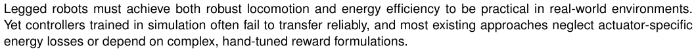
足式机器人必须兼顾稳健运动与能量效率，才能在现实环境中具备实用性。然而，在仿真中训练的控制器往往无法可靠迁移，且大多数现有方法要么忽略了执行器特有的能量损耗，要么依赖复杂的手动调优奖励函数形式。
We propose a framework that integrates sim-to-real reinforcement learning with a physics-grounded energy model for permanent magnet synchronous motors. The framework requires a minimal parameter set to capture the simulation–reality gap and employs a compact four-term reward with a first-principle-based energetic loss formulation that balances electrical and mechanical dissipation.
核对原版排版
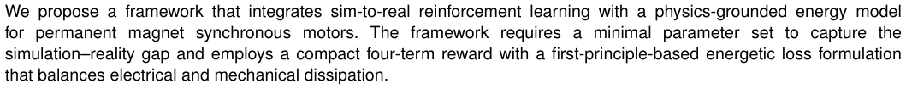
我们提出了一个将仿真到现实强化学习与基于物理机理的永磁同步电机（PMSM）能量模型相结合的框架。该框架仅需极小参数集即可表征仿真与现实之间的差距，并采用包含四个紧凑奖励项的奖励函数，结合基于第一性原理的能量损耗表述来平衡电学与机械耗散。
We evaluate and validate the approach through a bottom-up dynamic parameter identification study, spanning actuators, full-robot in-air trajectories and on-ground locomotion. The framework is tested on three primary platforms and deployed on ten additional robots, demonstrating reliable policy transfer without randomization of dynamic parameters. Our method improves the energetic efficiency over state-of-the-art methods, achieving a 32 % reduction in the full Cost of Transport of ANYMAL (1 . 27). All code, models, and datasets will be released.
核对原版排版
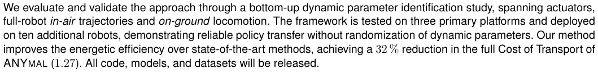
我们通过一项自底向上的动力学参数辨识研究对该方法进行评估与验证，涵盖执行器、整机空中轨迹以及地面运动。该框架在三大主要平台上进行了测试，并部署于另外十台机器人上，证明了无需对动力学参数进行随机化即可实现可靠的策略迁移。与现有最先进方法相比，我们的方法提高了能量效率，使 ANYMAL 的整机运输成本（Cost of Transport, 1 . 27）降低了 32 %。所有代码、模型和数据集都将开源发布。
Keywords
核对原版排版
关键词
Legged robots, Quadrupedal locomotion, Reinforcement learning, Simulation-to-real transfer, Reality gap, Energy efficiency
核对原版排版
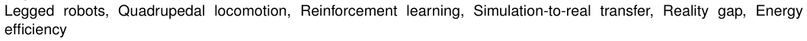
足式机器人，四足运动，强化学习，仿真到现实迁移，现实差距，能量效率
Legged robots promise versatile mobility in environments that are inaccessible to wheeled or tracked platforms. However, achieving robust and efficient locomotion remains a central challenge: Controllers trained in simulation only show the same performance on the real system if the system and actuator dynamics are accurately modeled. Modeling errors, in particular in the actuator dynamics, where electrical and mechanical losses are often not properly modeled, lead to major inefficiencies and hence directly affect robot endurance and payload capacity.
核对原版排版
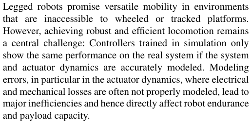
足式机器人有望在轮式或履带式平台无法通行的环境中实现多功能机动性。然而，实现稳健且高效的运动仍是一项核心挑战：在仿真中训练的控制器，唯有在系统与执行器动力学均被精确建模的情况下，才能在真实系统上表现出相同性能。建模误差——尤其是在通常未能对电学和机械损耗进行适当建模的执行器动力学中——会导致严重的效率低下，进而直接影响机器人的续航能力与负载能力。
Prior work has addressed the simulation-to-reality gap through extensive domain randomization, residual modeling, or full physics identification. While these methods have demonstrated impressive sim-to-real transfer, they often require specialized sensors, exhaustive parameter identification, or iterative expert tuning of heuristic models and reward functions. As a result, current RL controller pipelines often rely on complex, high-dimensional reward functions. As modeling errors increase the sim-to-real gap, environment design often resorts to repeatedly adjusting rewards based on observed discrepancies in the real system—an ad-hoc process that can be repeated many times without clear structure, and which further disconnects rewards from physical notions such as efficiency.
核对原版排版
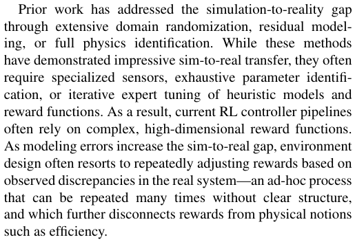
先前的工作通过广泛的域随机化、残差建模或全物理辨识来解决仿真到现实的差距。尽管这些方法展示出了令人瞩目的仿真到现实迁移效果，但它们往往需要专用传感器、详尽的参数辨识，或者专家对启发式模型与奖励函数的反复迭代调优。因此，当前的强化学习（RL）控制器管线往往依赖于复杂的高维奖励函数。随着建模误差加剧了仿真到现实的差距，环境设计往往不得不根据在真实系统上观察到的差异反复调整奖励——这是一种缺乏清晰结构、可被多次重复的权宜之计（ad-hoc 过程），并使得奖励进一步与诸如效率等物理概念脱节。
This work introduces a framework that addresses these challenges by combining a sim-to-real RL pipeline with systematic actuator modeling. We perform a bottom-up analysis: first characterizing single actuator models, then estimating dynamic parameters on the full-system level, and finally validating locomotion control across multiple platforms. A focus of our framework is the integration of a physics-grounded energy model for Permanent Magnet Synchronous Motors (PMSMs), which enables training of locomotion policies that are both transferable and energyefficient.
核对原版排版
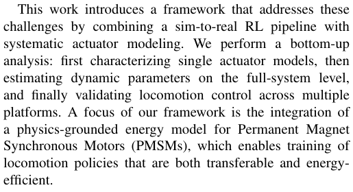
本文介绍了一个通过将仿真到现实强化学习管线与系统化执行器建模相结合来应对这些挑战的框架。我们进行了一项自底向上的分析：首先对单个执行器模型进行表征，然后在整机系统层级估计动力学参数，最后在多个平台上验证运动控制。我们框架的一个重点是集成了基于物理机理的永磁同步电机（PMSM）能量模型，从而能够训练出兼具可迁移性与能量效率的运动策略。
The main contributions of this work are:
核对原版排版
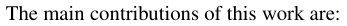
本文的主要贡献如下：
1. Sim-to-real pipeline: An open-source modeling pipeline that integrates actuator and system models into RL training (see Section 2).
核对原版排版
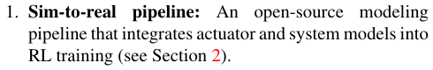
1. 仿真到现实管线：一个将执行器和系统模型整合到强化学习（RL）训练中的开源建模管线（参见 Section 2）。
2. Bottom-up performance analysis: Multi-level evaluation from single actuators to full-robot locomotion,
核对原版排版
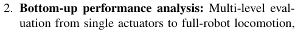
2. 自底向上性能分析：从单个执行器到整机机器人运动的多层级评估，
1Robotic Systems Lab, ETH Zurich, Zurich, Switzerland
核对原版排版
1Robotic Systems Lab, ETH Zurich, Zurich, Switzerland
Corresponding author:
核对原版排版
通信作者：
Filip Bjelonic, filipb@leggedrobotics.com
核对原版排版
Filip Bjelonic, filipb@leggedrobotics.com
展开第 1 页原版整页（含全部图表、公式与页眉页脚）
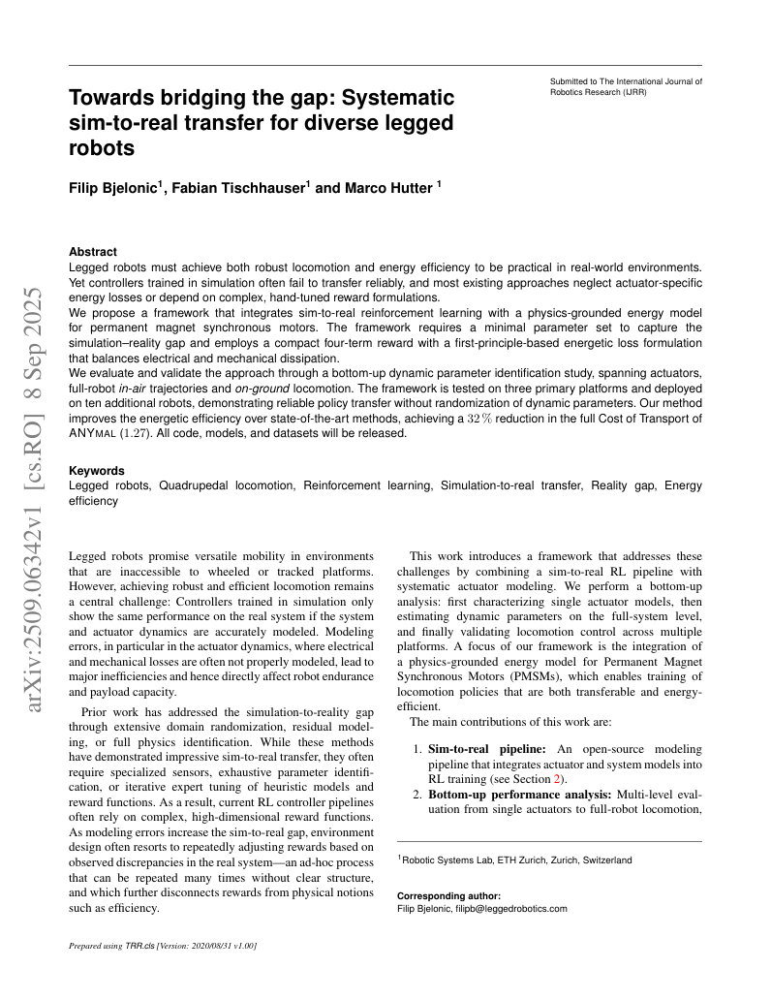
第 2 页Page 2PDF p.2
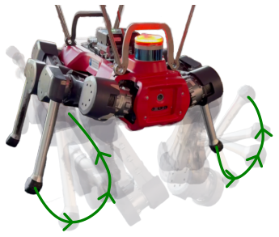
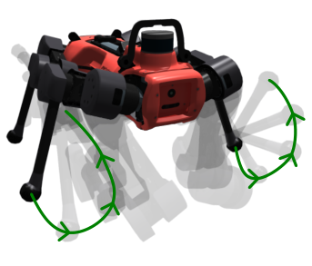
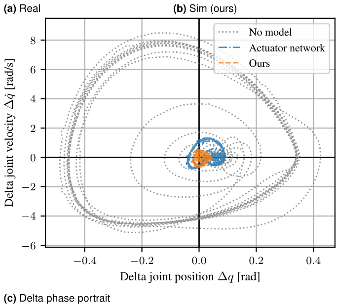
Figure 1. Comparison of real and simulated robot trajectories under a 0.1 – 2 . 0 Hz chirp input. (a) Picture of the real robot with an overlaid trace showing its motion sequence from experiment. (b) Equivalent view in simulation using our modeling approach. In both (a) and (b), the robot’s base is suspended so that its legs swing freely. (c) Phase portrait of the “delta” joint state—i.e., at each timestep, the real joint position minus the simulated joint position (x-axis) and the real joint velocity minus the simulated joint velocity (y-axis)—plotted separately for three modeling approaches: no model (light gray), state-of-the-art actuator network (blue), and our proposed method (orange). Points nearer to (0, 0) indicate that the simulated trajectory more closely matches the real trajectory.
核对原版排版
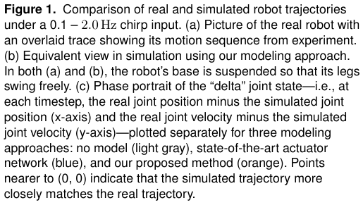
图 1. 真实与仿真机器人轨迹在 0.1 – 2 . 0 Hz 线性调频（chirp）输入下的对比。(a) 真实机器人照片，上方叠加显示其实验运动序列的运动轨迹线。(b) 使用我们建模方法的仿真等效视图。在 (a) 和 (b) 中，机器人的基座均处于悬吊状态，使其腿部能够自由摆动。(c) “增量（delta）”关节状态的相图——即在每个时间步，以真实关节位置减去仿真关节位置（x 轴），以及真实关节速度减去仿真关节速度（y 轴）——分别针对三种建模方法绘制：无模型（浅灰色）、最先进的执行器网络（蓝色）以及我们提出的方法（橙色）。越靠近 (0, 0) 的点表明仿真轨迹与真实轨迹吻合得越紧密。
including comparisons with state-of-the-art black-box approaches (see Section 3.2).
核对原版排版
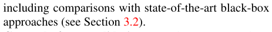
包括与现有最先进黑盒方法的对比（参见 Section 3.2）。
3. Cross-platform validation: Deployment on three primary platforms (ANYMAL, TYTAN, MINIMAL) and over ten additional systems (see Section 3.3).
核对原版排版
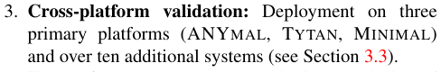
3. 跨平台验证：在三个主要平台（ANYMAL、TYTAN、MINIMAL）以及十余个额外系统上的部署（参见 Section 3.3）。
4. Energetic assessment: Quantitative analysis of electrical and mechanical efficiency, demonstrating improvements over previous methods (see Section 3.3.3).
核对原版排版
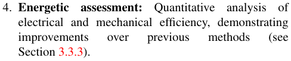
4. 能量评估：对电效率和机械效率进行定量分析，展示出相对于先前方法的性能提升（参见 Section 3.3.3）。
Additional contributions include:
核对原版排版
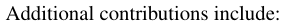
其他贡献包括：
- A joint position control strategy with position saturation for hardware protection during locomotion (see Section 2.3.2).
核对原版排版
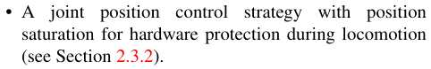
- 提出了一种带有位置饱和的关节位置控制策略，用于在运动过程中保护硬件（参见 Section 2.3.2）。
- Empirical evidence that only four reward terms suffice for effective locomotion training (see Section 2.3.3 and 4.2).
核对原版排版
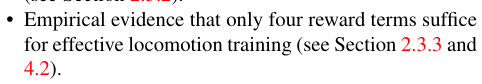
- 提供了仅凭四个奖励项便足以进行有效运动训练的实证依据（参见 Section 2.3.3 与 4.2）。
- A physics-grounded energetic reward that balances electrical and mechanical losses to minimize overall consumption (see Section 2.3.3).
核对原版排版
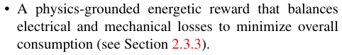
- 提出了一种基于物理机理的能量奖励，通过平衡电学与机械损耗以实现总能耗最小化（参见 Section 2.3.3）。
All code, models, and raw data underlying the results, including those for most figures and tables, will be released.
核对原版排版
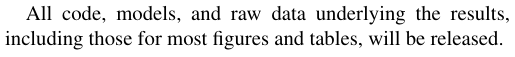
支撑这些结果的所有代码、模型及原始数据（包括大多数图表所对应的数据）均将开源发布。
1 Related Work
核对原版排版
1 相关工作
Our manuscript focuses on state-of-the-art methods for rigid robots actuated by Permanent Magnet Synchronous Motors (PMSMs), which are the dominant choice in modern legged robots due to their efficiency and controllability (see Figure 2 for a few prominent examples ( 1–5 )). For clarity, we note that while “Brushless Direct Current Motor (BLDC)” is often used in industry as a generic label for brushless motors, it formally refers to machines with trapezoidal back-EMF driven by six-step commutation, whereas most legged robots employ sinusoidal PMSMs with field-oriented control ( 6, 7 ).
核对原版排版
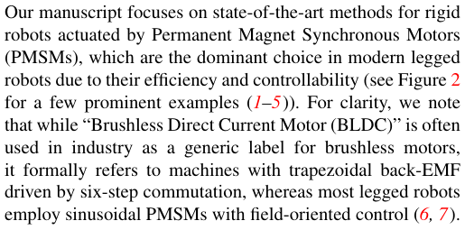
我们的论文侧重于针对由永磁同步电机（PMSM）驱动的刚性机器人的最先进方法，由于其高效率和良好可控性，PMSM 是现代足式机器人的主流选择（若干突出示例见图 2 ( 1–5 )）。为明确起见，我们指出：尽管“无刷直流电机（BLDC）”在工业界常被用作无刷电机的统称，但严格来说，它指的是具有梯形反电动势并通过六步换相驱动的电机；而大多数足式机器人则采用配合磁场定向控制的正弦波 PMSM ( 6, 7 )。
1.1 Modeling
核对原版排版
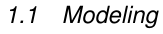
1.1 建模
Modeling approaches for sim-to-real transfer can be broadly categorized by the trade-off between physical prior knowledge and the amount of real-world data required. At one end, simplified physics models and domain randomization require little real-world data but assume accurate rigid-body dynamics. Residual physics approaches combine moderate priors with learned corrections, needing additional data to capture unmodeled effects. At the other end, full dynamics models minimize assumptions but demand extensive real-world interaction to learn complete system dynamics. Both model-based and purely data-driven approaches are represented across this spectrum.
核对原版排版
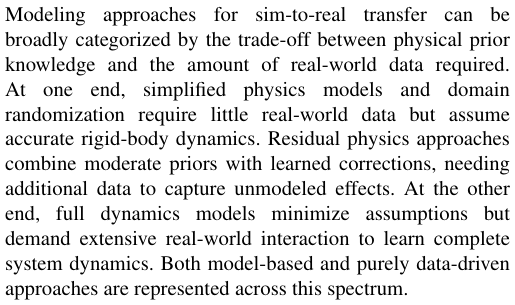
用于仿真到现实迁移的建模方法，大致可以根据物理先验知识与所需真实世界数据量之间的权衡进行分类。在谱系的一端，简化的物理模型和域随机化所需真实世界数据极少，但假定具有精确的刚体动力学。残差物理方法将适度的先验与学习到的修正相结合，需要额外的数据来捕获未建模效应。在谱系的另一端，全动力学模型尽可能减少假设，但需要大量的真实世界交互来学习完整的系统动力学。基于模型的方法和纯数据驱动的方法均分布在这一谱系之中。
Low-data approaches. These methods rely mostly on rigid-body dynamics from the robot description. Cassie SysID combined with domain randomization ( 8 ), handcalibrated parameters with randomized variations ( 9 ), and classical dynamics randomization for reinforcement learning ( 10 ) or imitation learning ( 11 ) fall into this category. Large-scale randomization has been shown effective for dexterous manipulation (DexTreme ( 12 )). Variants include active domain randomization ( 13 ), probabilistic approaches such as BayesSim ( 14 ), adversarial domain randomization ( 15 ), and methods like DROPO ( 16 ).
核对原版排版
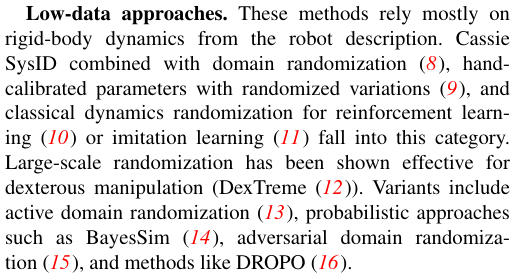
低数据量方法。这些方法主要依赖于由机器人描述文件提供的刚体动力学。Cassie SysID 结合域随机化 ( 8 )、手动标定参数配合随机变动 ( 9 )，以及用于强化学习 ( 10 ) 或模仿学习 ( 11 ) 的经典动力学随机化，均属于此类。大规模随机化已被证明对灵巧操作有效（DexTreme ( 12 )）。其变体包括主动域随机化 ( 13 )、诸如 BayesSim ( 14 ) 等概率方法、对抗域随机化 ( 15 ) 以及 DROPO ( 16 ) 等方法。
Moderate-data approaches. Residual models combine physics priors with learned corrections, often focusing on actuator or body-level dynamics. Neural augmentations of simulators capture uncertainties ( 17 ), while adversarial techniques such as SimGAN identify simulation parameters ( 18 ).
核对原版排版
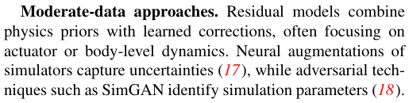
中等数据量方法。残差模型将物理先验与学习到的修正项相结合，通常聚焦于执行器或本体层级的动力学。对仿真器的神经网络增强能够捕获不确定性 ( 17 )，而诸如 SimGAN 等对抗技术则用于辨识仿真参数 ( 18 )。
展开第 2 页原版整页（含全部图表、公式与页眉页脚）
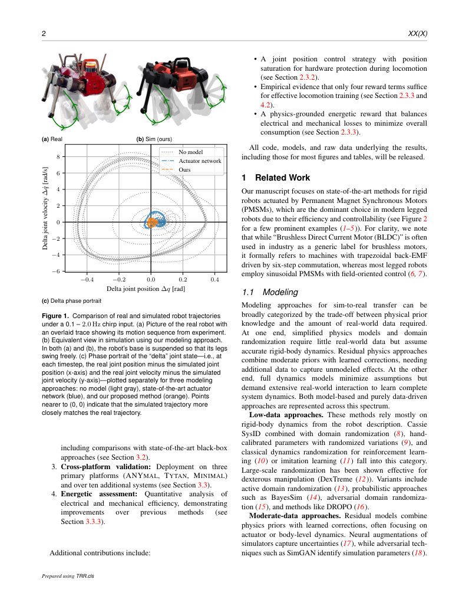
第 3 页Page 3PDF p.3
Neural-Augmented Simulation (NAS) introduces recurrent residual dynamics ( 19 ). Joint-centric methods include actuator networks that leverage joint torque sensors ( 20 ), unsupervised actuator models without torque sensing ( 21 ), drivelimit estimations on SPOT ( 22 ), and delta-action models through real-world rollouts (ASAP ( 23 )). Body-centric methods aim to identify physical parameters at the system level, for instance via sampling-based active exploration (SPIActive ( 24 )) or learning discrepancies from human demonstrations (DROID ( 25 )). Hybrid strategies combine low-level SysID with residual dynamics models, such as aerodynamic compensation for the floating robot BALLU ( 26 ).
核对原版排版
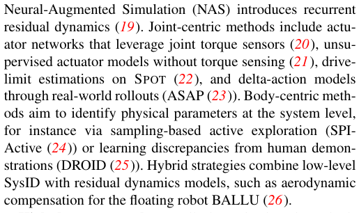
神经增强仿真（NAS）引入了循环残差动力学 ( 19 )。以关节为中心的方法包括利用关节扭矩传感器的执行器网络 ( 20 )、无扭矩传感的无监督执行器模型 ( 21 )、针对 SPOT 的驱动极限估计 ( 22 )，以及通过真实世界 rollout 构建的增量动作（delta-action）模型（ASAP ( 23 )）。以本体为中心的方法旨在系统层级辨识物理参数，例如通过基于采样的自主探索（SPIActive ( 24 )）或从人类演示中学习差异（DROID ( 25 )）。混合策略则将低层级系统辨识（SysID）与残差动力学模型相结合，例如针对漂浮机器人 BALLU 的气动力补偿 ( 26 )。
High-data approaches. Full dynamics-based methods attempt to learn the complete robot dynamics with little or no reliance on physical priors. DayDreamer ( 27 ) learns world models from scratch, updating them through realworld rollouts while replaying the best policy. Offline world models similarly combine simulation-initialized dynamics with real-world fine-tuning ( 28 ). Other approaches estimate grounded forward and inverse dynamics transformations ( 29 ) to enhance simulator accuracy.
核对原版排版
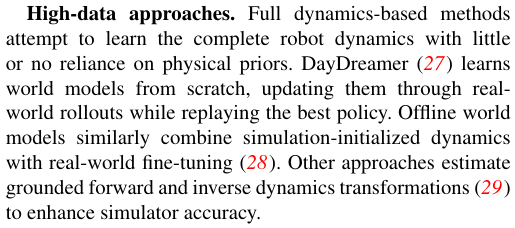
高数据量方法。基于全动力学的方法试图在极少或完全不依赖物理先验的情况下学习完整的机器人动力学。DayDreamer ( 27 ) 从零开始学习世界模型，在回放最优策略的同时通过真实世界 rollout 来更新世界模型。离线世界模型同样将仿真初始化的动力学与真实世界的微调相结合 ( 28 )。另有其他方法估计基于物理现实的正向与逆向动力学变换 ( 29 )，以提升仿真器的精度。
Online adaptation. To cope with discrepancies that remain during deployment, online adaptation mechanisms are employed. Strategies include online fine-tuning ( 30 ), meta-learning for rapid adaptation ( 31 ), and student–teacher schemes for online parameter identification ( 32 ).
核对原版排版
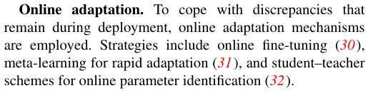
在线自适应。为了应对部署期间残留的差异，常采用在线自适应机制。相关策略包括在线微调 ( 30 )、用于快速自适应的元学习 ( 31 )，以及用于在线参数辨识的学生-教师方案 ( 32 )。
For comprehensive surveys on sim-to-real, see Muratore et al. ( 33 ) or Ju et al. ( 34 ).
核对原版排版
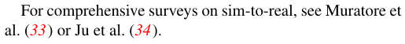
关于仿真到现实迁移的全面综述，参见 Muratore 等人 ( 33 ) 或 Ju 等人 ( 34 )。
While prior work has successfully employed domain randomization ( 8, 12 ) or residual dynamics ( 20, 21 ), these approaches often require specialized sensors or exhaustive parameter searches. Our method instead introduces a minimal set of parameters that compactly capture the simulation–reality gap, placing it within the class of moderate-data approaches. We further show that actuator drive dynamics are largely linear ( q ˆ → q ), which enables fast optimization of a concise and physically interpretable parameter set that transfers across platforms.
核对原版排版
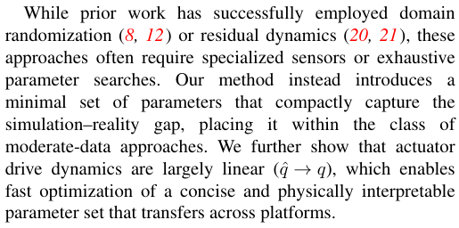
虽然先前的工作成功采用了域随机化 ( 8, 12 ) 或残差动力学 ( 20, 21 )，但这些方法通常需要专用传感器或详尽的参数搜索。相比之下，我们的方法引入了一组能够紧凑表征仿真与现实差距的极小参数集，使其归属于中等数据量方法类别。我们进一步表明执行器驱动动力学基本呈线性 ( q ˆ → q )，从而能够快速优化出一组简洁且具备物理可解释性、可跨平台迁移的参数集。
1.2 Control
核对原版排版
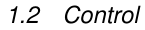
1.2 控制
Control of legged robots in complex terrain has been approached with both Model Predictive Control (MPC) and Reinforcement Learning (RL) ( 35–38 ). Current stateof-the-art emphasizes RL, often based on Proximal Policy Optimization (PPO) ( 39 ) and its constrained derivatives, such as IPO ( 40 ) or TRPO-based formulations for locomotion ( 41 ).
核对原版排版
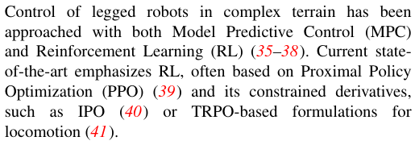
在复杂地形中对足式机器人的控制，已有模型预测控制（MPC）和强化学习（RL）两种途径 ( 35–38 )。当前最先进的技术侧重于 RL，通常基于近端策略优化（PPO）( 39 ) 及其受约束的衍生方法，例如用于运动控制的 IPO ( 40 ) 或基于 TRPO 的形式表达 ( 41 )。
Partial observability. Real-world control is inherently a partially observable Markov decision process (POMDP). Compared to fully observable MDPs, learning under partial observability is more challenging, as policies must cope with state aliasing and incomplete information ( 42 ). In practice, standard RL methods often exhibit degraded performance or unstable training when policies are restricted
核对原版排版
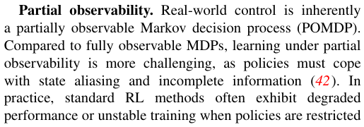
部分可观测性。真实世界的控制在本质上是一个部分可观测马尔可夫决策过程（POMDP）。与完全可观测的 MDP 相比，在部分可观测条件下学习更具挑战性，因为策略必须应对状态混叠与不完整信息 ( 42 )。在实践中，当策略受到限制
to partial observations ( 43, 44 ). Several strategies have been proposed to mitigate these challenges, including large-scale parallelized RL training ( 45 ), teacher–student distillation ( 32 ), and asymmetric actor–critic architectures where the critic has privileged state access ( 44 ).
核对原版排版
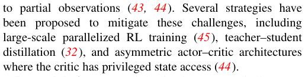
仅能获得部分观测时 ( 43, 44 )，标准强化学习方法往往表现出性能退化或训练不稳定。为此已提出若干策略来缓解这些挑战，包括大规模并行化强化学习训练 ( 45 )、教师-学生蒸馏 ( 32 )，以及 Critic 具有特权状态访问权限的非对称 Actor-Critic 架构 ( 44 )。
Reward design. Reward shaping is a central challenge, as locomotion policies often involve more than ten hand-crafted reward terms ( 32, 36, 46, 47 ), making tuning difficult and requiring expert heuristics. Constraint-based formulations can reduce the dimensionality of reward terms ( 41 ), but in practice, they shift part of the tuning complexity to the choice and scaling of constraints. Multi-morphology training similarly offloads tuning to central pattern generators ( 48 ). Other approaches attempt to automate reward design with large language models (Eureka ( 49 )) or remove explicit rewards altogether by optimizing intrinsic objectives, such as DIAYN ( 50 ).
核对原版排版
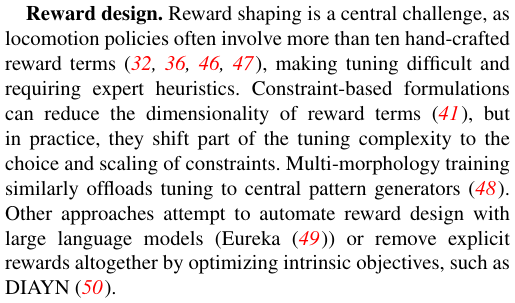
奖励设计。奖励塑形是一项核心挑战，因为运动策略通常涉及十多个手工设计的奖励项 ( 32, 36, 46, 47 )，导致调参困难且需要专家的启发式经验。基于约束的形式化表述可以降低奖励项的维度 ( 41 )，但在实践中，这会将部分调参复杂度转移到约束的选择与缩放尺度上。多形态训练同样将调参负担转嫁给中枢模式发生器 ( 48 )。其他方法则尝试利用大语言模型实现奖励设计的自动化（Eureka ( 49 )），或者通过优化内在目标完全摒弃显式奖励，例如 DIAYN ( 50 )。
Most recent controllers ( 36, 45 ) achieve agility, relying on high-dimensional and ad hoc reward shaping. We instead formulate rewards directly from actuator energy losses, yielding a compact and physically meaningful objective. Our formulation only requires four reward terms, which reduces tuning complexity.
核对原版排版
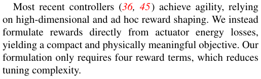
近期大多数控制器 ( 36, 45 ) 虽实现了敏捷性，但都依赖于高维且专门针对性的奖励塑形。与之不同，我们直接根据执行器能量损耗来构建奖励，从而得到了一个紧凑且具有物理意义的目标。我们的公式化表述仅需要四个奖励项，从而降低了调参复杂度。
1.3 Energy-efficient locomotion
核对原版排版
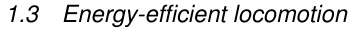
1.3 高能效运动
Energy-efficient control is critical for autonomous legged robots. Total losses consist of controller-independent terms such as sensing, computation, and inverter switching, and motion- respectively control-policy-dependent losses, which can be optimized. The literature on modeling motion-dependent energy losses can be grouped into pseudo-approximations, low-fidelity models, and highfidelity models.
核对原版排版
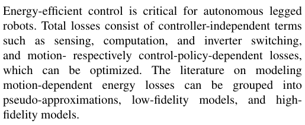
高能效控制对于自主足式机器人至关重要。总损耗由与控制器无关的项（如传感、计算和逆变器开关损耗）以及分别取决于运动与控制策略的损耗构成，后者是可以被优化的。关于对运动相关能量损耗进行建模的文献可以分为伪近似方法、低保真度模型和高保真度模型。
Pseudo-approximations. Simplified proxies such as squared torque are frequently used to approximate energy costs. However, many works omit mechanical power consumption altogether ( 32, 36, 41, 46, 47 ), or introduce objectives with weak correlation to actual energy, e.g., penalizing changes in power ( 48 ).
核对原版排版
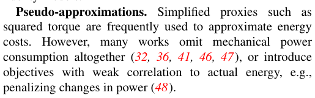
伪近似方法。诸如力矩平方等简化代理量常被用来近似能耗成本。然而，许多工作完全忽略了机械功率损耗 ( 32, 36, 41, 46, 47 )，或者引入了与实际能量相关性较弱的目标，例如惩罚功率的变化 ( 48 )。
Low-fidelity models. These methods typically split energy into mechanical power and Joule heating ( 51 ). Scaling between these terms is often hand-tuned or derived from motor characteristics ( 52, 53 ), enabling training of energyaware locomotion controllers ( 3, 54 ).
核对原版排版
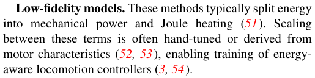
低保真度模型。这些方法通常将能量划分为机械功率和焦耳热 ( 51 )。这两项之间的比例权重通常通过人工调优或根据电机特性推导得出 ( 52, 53 )，从而支持训练具有能量感知能力的运动控制器 ( 3, 54 )。
High-fidelity models. Advanced approaches numerically compute individual loss components, including copper losses ( P Cu), iron losses ( P FE), permanent magnet losses ( P PM), and mechanical dissipation ( 55 ). Recent data-driven work has employed accurate power measurement to train neural networks that predict instantaneous power consumption in legged robots ( 56 ).
核对原版排版
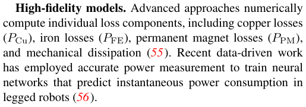
高保真度模型。更先进的方法通过数值方法计算各个独立的损耗分量，包括铜损 ( P Cu )、铁损 ( P FE )、永磁体损耗 ( P PM ) 以及机械耗散 ( 55 )。近期的数据驱动研究则利用精确的功率测量来训练神经网络，从而预测足式机器人的瞬时功耗 ( 56 )。
Existing energy models range from simplified proxies such as torque-squared penalties ( 32, 41 ) to computationally intensive numerical loss calculations ( 55 ). Building on prior
核对原版排版
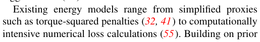
现有的能量模型涵盖了从力矩平方惩罚等简化代理量 ( 32, 41 ) 到计算密集型的数值损耗计算 ( 55 ) 的各种方法。在先前
展开第 3 页原版整页（含全部图表、公式与页眉页脚）
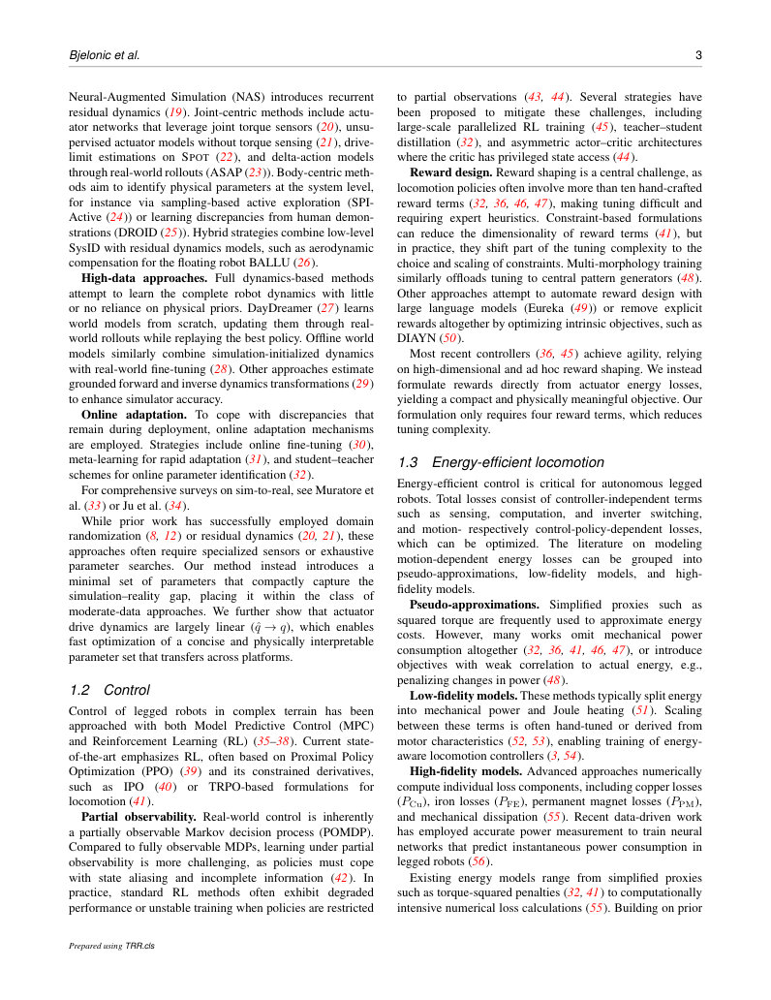
第 4 页Page 4PDF p.4
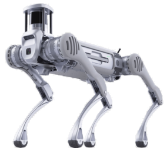
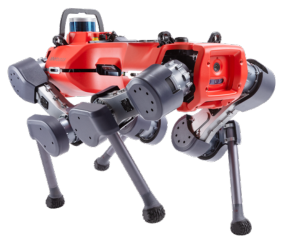
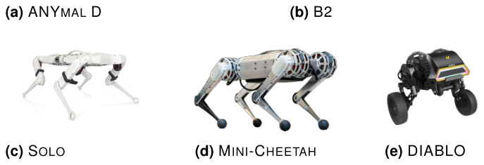
Figure 2. Representative legged robots with explicitly documented use of PMSM for actuation.
核对原版排版
图 2. 明确记录采用 PMSM 进行驱动的代表性足式机器人。
actuator-aware formulations ( 52, 53 ), we propose a loss model tailored to PMSMs that captures the dominant sources of energy dissipation while remaining tractable within modern reinforcement learning simulators. This balance enables training of locomotion policies that are explicitly energy-efficient.
核对原版排版
执行器感知形式化方法 ( 52, 53 ) 的基础上，我们提出了一种专为 PMSM 量身定制的损耗模型，该模型既能捕捉能量耗散的主要来源，又能在现代强化学习仿真器中保持易于计算求解。这种平衡使得训练显式具备高能效特性的运动策略成为可能。
1.4 Notation
核对原版排版
1.4 符号表示
We adopt the following notation conventions throughout the paper:
核对原版排版
我们在全文中采用以下符号约定：
- Scalars are written normal ( x ), vectors in bold ( x ).
核对原版排版
- 标量采用正体书写 ( x )，向量采用粗体 ( x )。
- Target values are denoted with a hat (ˆ x ).
核对原版排版
- 目标值用带帽符号表示 (ˆ x )。
- All vector norms are Euclidean, ∥ x ∥ = ∥ x ∥ 2.
核对原版排版
- 所有向量范数均为欧氏范数，即 ∥ x ∥ = ∥ x ∥ 2。
- The term motor refers to the actuator input side, and joint refers to the output side.
核对原版排版
- 术语“电机”（motor）指执行器输入端，“关节”（joint）指输出端。
- Reduced inertia with respect to the joint is indicated with a tilde ( I˜ ).
核对原版排版
- 折算至关节端的等效转动惯量用波浪号表示 ( I˜ )。
- Robot legs are indexed LF (left front), RF (right front), LH (left hind), RH (right hind).
核对原版排版
- 机器人的腿部索引分别为 LF（左前）、RF（右前）、LH（左后）以及 RH（右后）。
2 Method
核对原版排版
2 方法
Our pipeline to bridge the reality gap comprises three stages, illustrated in Figure 3. (i) Data collection on the real robot (Section 2.1), using joint impedance (PD) control to execute and record trajectories. (ii) Simulator alignment via evolutionary parameter identification (Section 2.2), where we fit a compact set of parameters so that simulated in-air trajectories match the recorded ones. (iii) Policy learning and deployment (Section 2.3), where we train a blind locomotion controller and deploy it zero-shot on hardware. We refer to the overall approach as Precise Adaptation through Continuous Evolution (PACE).
核对原版排版
我们用于弥合现实差距的流程包含三个阶段，如图 3 所示：(i) 真实机器人上的数据采集（第 2.1 节），利用关节阻抗（PD）控制来执行并记录轨迹；(ii) 通过演化参数辨识进行仿真器对齐（第 2.2 节），拟合一组紧凑的参数，使仿真中的空中轨迹与记录的实际轨迹相吻合；(iii) 策略学习与部署（第 2.3 节），在仿真中训练盲走运动控制器并将其零样本部署到硬件上。我们将该整体方法称为通过连续演化的精确自适应（Precise Adaptation through Continuous Evolution，PACE）。
2.1 Data collection
核对原版排版
2.1 数据采集
Data collection is conducted with a fixed base to avoid motion cross-coupling between different limbs. We excite all joints simultaneously using chirp signals of 20 – 60 s per sequence, sweeping from a minimum to a maximum frequency. Signals and measurements are time-synchronized and logged at high sampling rates (typically 400 – 10 000 Hz). We found the following conditions to work best.
核对原版排版
数据采集是在固定基座的条件下进行的，以避免不同肢体之间的运动交叉耦合。我们使用每个序列时长为 20 – 60 s 的线性调频（chirp）信号同时激励所有关节，频率从最低扫至最高。信号和测量数据保持时间同步，并以高采样率（通常为 400 – 10 000 Hz）进行记录。我们发现以下实验条件效果最佳。
Fixed base (no base motion) During simulation replay we rigidly fix the base in air. For robots with symmetry planes (e.g., two for ANYMAL/MINIMAL, one for TYTAN), we cancel net base wrenches by commanding symmetric joint trajectories.
核对原版排版
固定基座（无基座运动）。在仿真重放期间，我们将基座刚性固定在空中。对于具有对称面的机器人（例如 ANYMAL/MINIMAL 具有两个对称面，TYTAN 具有一个对称面），我们通过发送对称的关节轨迹指令来抵消基座承受的合力与合力矩（net base wrenches）。
No contacts (legs free in air). We avoid all contacts (including inter-leg) so the identification is not confounded by unmeasured external forces. Moreover, in stance the base inertia dominates the effective joint dynamics; collecting inair data isolates leg/drive dynamics. A simplified model in Appendix B shows that in agile stance the effective base inertia exceeds leg/drive inertias by 1–2 orders of magnitude (ANYMAL example).
核对原版排版
无接触（腿部悬空）。我们避免所有接触（包括腿间接触），从而使参数辨识不受未测外力的干扰。此外，在支撑相时，基座惯量主导了有效关节动力学；而采集空中悬空数据可以单独隔离出腿部及驱动系统的动力学。附录 B 中的简化模型表明，在敏捷支撑相下，有效基座惯量比腿部/驱动惯量高出 1–2 个数量级（以 ANYMAL 为例）。
Excitation bandwidth. Ideally, trajectories cover up to f policy / 2 (Nyquist of the control policy), since this is the highest possible frequency that the controller can excite in the system. Structural constraints may limit this (e.g., 2 Hz on ANYMAL; 10 Hz on TYTAN/MINIMAL). If structural or practical constraints prevent reaching this range, the excitation should at least cover twice the highest frequency expected in the locomotion controller’s motion (e.g., 1 Hz for our robots walking at 1 m s−1 ).
核对原版排版
激励带宽。理想情况下，轨迹频率应覆盖至 f policy / 2（控制策略的奈奎斯特频率），因为这是控制器能在系统中激励出的最高频率。结构约束可能会对此有所限制（例如 ANYMAL 上为 2 Hz；TYTAN/MINIMAL 上为 10 Hz）。如果结构或实际限制阻碍了达到该范围，则激励至少应覆盖运动控制器动作中预期最高频率的两倍（例如，我们的机器人以 1 m s−1 行走时预期频率为 1 Hz）。
Joint-level PD gains. Gains Pτ , Dτ set the closed-loop poles of the joint tracking, cf. the transfer function
核对原版排版
关节级 PD 增益。增益 Pτ , Dτ 决定了关节跟踪的闭环极点，参见传递函数
where Ia is the (armature/effective) inertia, d viscous damping, and Td a (lumped) delay. High gains push poles to higher frequencies, demanding higher excitation bandwidth (often infeasible). We therefore use small gains in simulation for both identification and policy training—so that the characteristic dynamics (poles) appear at lower frequencies.
核对原版排版
其中 Ia 为（电枢/等效）转动惯量，d 为粘性阻尼，Td 为（集总）延迟。高增益会将极点推向更高频率，从而需要更高的激励带宽（这通常是不可行的）。因此，在仿真中进行参数辨识和策略训练时，我们均采用较小的增益，以便特征动力学（极点）出现在较低频率处。
2.2 Parameter identification
核对原版排版
2.2 参数辨识
We align the simulator by fitting a small set of parameters that dominantly shape the joint-space dynamics: per-joint armature/inertia I a , viscous damping d , Coulomb friction τ f , and joint bias q ˜ b , plus a global command delay Td . With n actuated joints, the parameter vector is
核对原版排版
我们通过拟合一组主导关节空间动力学的关键参数来对齐仿真器：每个关节的电枢/转动惯量 I a、粘性阻尼 d、库仑摩擦 τ f 和关节偏置 q ˜ b，外加全局指令延迟 Td。对于具有 n 个驱动关节的机器人，参数向量为
We instantiate N = 4096 parallel environments with the real-experiment base pose, each with parameters p e . We
核对原版排版
我们实例化了 N = 4096 个采用真实实验基座姿态的并行环境，每个环境均配置有参数 p e。我们
第 5 页Page 5PDF p.5
Figure 3. Overview of the proposed Precise Adaptation through Continuous Evolution (PACE) pipeline with policy training. (i) Collection of real in-air data on a fixed-base setup (top left). (ii) Evolutionary parameter fitting of joint dynamics to align simulated and measured trajectories (top right). (iii) Blind policy training in simulation with zero-shot deployment on hardware (bottom).
核对原版排版
图 3. 所提出的结合策略训练的连续演化精确自适应（PACE）流程概述。(i) 在固定基座实验装置上采集真实空中数据（左上）。(ii) 对关节动力学进行演化参数拟合，使仿真轨迹与实测轨迹对齐（右上）。(iii) 在仿真中进行盲走策略训练，并零样本部署至硬件系统（底部）。
replay the recorded joint targets at the simulation rate used later for RL, and measure the simulated joint trajectories qsim i,e. The identification objective for environment e is the timeaveraged mean-squared joint-position error:
核对原版排版
按照后续用于强化学习（RL）的仿真采样率重放记录的关节目标，并测量仿真的关节轨迹 qsim i,e。环境 e 的辨识目标函数为时间平均的关节位置均方误差：
yielding a loss vector L ∈ RN . We optimize
核对原版排版
从而产生损失向量 L ∈ RN。我们通过
using Covariance Matrix Adaptation Evolution Strategy (CMA-ES) ( 57 ) over the population. Evolutionary search is robust to local minima ( 58–60 ) and works well at this moderate dimensionality (typically ≈ 49 parameters for our robots). We found CMA-ES reliable and sample-efficient in massively parallel GPU simulation; with fewer samples, Bayesian optimization is an alternative.
核对原版排版
在种群上使用协方差矩阵自适应演化策略（CMA-ES）( 57 ) 进行优化。演化搜索对局部极小值具有较强的鲁棒性 ( 58–60 )，且在这种中等维度下表现良好（对于我们的机器人通常约为 49 个参数）。我们发现在大规模并行 GPU 仿真中，CMA-ES 可靠且样本效率高；在样本量较少时，贝叶斯优化是一种可行的替代方案。
Single-joint dynamics model. For reference, a single joint obeys
核对原版排版
单关节动力学模型。作为参考，单个关节遵循以下动力学方程：
第 6 页Page 6PDF p.6
where τf models Coulomb friction and τ comp denotes firmware-level compensations (e.g., cogging compensations, plant inversion, friction observers). Assuming tight current control and a saturation nonlinearity on commanded torque (cf. Figure 13), a practical closed-loop form is
核对原版排版
其中 τf 用于对库仑摩擦建模，τ comp 表示固件级补偿（例如齿槽转矩补偿、对象求逆补偿、摩擦观测器等）。假设电流环控制紧密且指令力矩存在饱和非线性（参见图 13），实用的闭环形式为
Drive-level simplifications (e.g., load-independent damping) are common but imperfect; actual damping and torque–current maps are often state dependent. Hence, fitting parameters against full-robot in-air data (rather than isolated drives; see Section 4.1.2) is critical.
核对原版排版
驱动器层面的简化（例如与负载无关的阻尼）虽然很常见，但并不完善；实际的阻尼和力矩-电流映射通常与状态相关。因此，基于整机空中悬空数据（而非单独的驱动器；见第 4.1.2 节）来拟合参数至关重要。
Finally, note a non-uniqueness if PD gains are cooptimized with the dynamics. Any common scaling uc of {Ia, d, Pτ , Dτ } preserves (6) and trajectories:
核对原版排版
最后，需要注意若将 PD 增益与动力学参数进行联合优化时存在的非唯一性。对 {Ia, d, Pτ , Dτ } 施加任意公因子缩放 uc 均能保持 (6) 式及其轨迹不变：
We therefore do not include PD gains in the identification and assume these to be known.
核对原版排版
因此，我们在参数辨识中不包含 PD 增益，并假设它们是已知的。
2.3 Learning environment
核对原版排版
2.3 学习环境
Having addressed simulator alignment through parameter identification, we now turn to the learning-based control stage. Because PACE identifies the dynamics end-to-end, we do not use dynamics randomization. We randomize the task (pushes, ground friction) and terrains (flat/rough, stairs, boxes, slopes). We otherwise follow standard practice ( 45 ), emphasizing only differences below.
核对原版排版
在通过参数辨识完成仿真器对齐后，我们现在转向基于学习的控制阶段。由于 PACE 端到端地辨识动力学，我们不使用动力学随机化。我们对任务（推力扰动、地面摩擦）以及地形（平坦/崎岖、楼梯、箱体、斜坡）进行随机化。在其他方面我们遵循标准做法 ( 45 )，下文仅强调不同之处。
2.3.1 Observations We model the problem as a POMDP. Accordingly, we use asymmetric PPO ( 44 ): the policy receives proprioception oprop ⊂ s , while the critic observes privileged state s . Policy (proprioception). Base linear velocity v B , base angular velocity ω B , gravity in base frame g B (from a state estimator); user commands ( vBx, v By, ω Byaw); joint positionsq and velocities q ˙ ; previous action a t− 1. We add i.i.d. noise to all but commands and a t− 1. The observation has dimension oprop ∈ R48 .
核对原版排版
2.3.1 观测 我们将该问题建模为 POMDP。相应地，我们使用非对称 PPO ( 44 )：策略接收本体感知 oprop ⊂ s ，而 critic 观测特权状态 s 。策略（本体感知）。基座线速度 v B 、基座角速度 ω B 、基座坐标系下的重力向量 g B （来自状态估计器）；用户指令 ( vBx, v By, ω Byaw)；关节位置 q 与速度 q ˙ ；上一动作 a t− 1。除指令和 a t− 1 外，我们对其余各项均添加独立同分布（i.i.d.）噪声。观测维度为 oprop ∈ R48 。
Critic (privileged). Noise-free oprop∗ plus base wrench ( F B, τ B ), ground friction, binary foot contacts, and a height scan centered at the base CoM spanning 2 m × 3 m at 0 . 15 m resolution. Thus opriv ∈ R305 and s = [ oprop∗ , opriv ] ∈ R353 .
核对原版排版
Critic（特权信息）。无噪声的 oprop∗ 加上基座力旋量 ( F B, τ B )、地面摩擦力、二值足端接触状态，以及以基座质心（CoM）为中心、范围为 2 m × 3 m、分辨率为 0 . 15 m 的高度扫描。因此 opriv ∈ R305 且 s = [ oprop∗ , opriv ] ∈ R353 。
2.3.2 Actions and hard-limit safe PD control The policy outputs joint position offsets a t = π ( oprop t ) relative to a default posture q 0, which are converted to torques and tracked by a current loop (cf. Figure 14):
核对原版排版
2.3.2 动作与硬限位安全 PD 控制 策略输出相对于默认姿态 q 0 的关节位置偏移量 a t = π ( oprop t )，该偏移量被转换为力矩并由电流环进行跟踪（参见图 14）：
Before sending targets q ˆ t = a t + q 0 to the drives we apply a joint-limit saturation to guarantee zero commanded torque toward a hard limit while preserving motion away from it. Let
核对原版排版
在将目标 q ˆ t = a t + q 0 发送至驱动器之前，我们应用关节限位饱和处理，以保证朝向硬限位方向的指令力矩为零，同时保留背离硬限位的运动。设
Q feas be the feasible set and Q soft ⊂Q feas a soft-limit band. For joint j with soft/hard bounds qjsoft , qjhard ,
核对原版排版
Q feas 为可行集，Q soft ⊂ Q feas 为软限位区间。对于具有软/硬限位边界 qjsoft , qjhard 的关节 j ，
At qj = qjhard this yields q ˆ j = qjhard so the PD term toward the limit vanishes. The same logic applies near the lower bound. This saturation runs in both simulation and on hardware.
核对原版排版
在 qj = qjhard 处，这会产生 q ˆ j = qjhard ，从而使朝向限位方向的 PD 项归零。同样的逻辑也适用于下限附近。该饱和处理在仿真和硬件上均运行。
2.3.3 Rewards Thanks to fitted dynamics parameters, we use only four terms: velocity tracking and energy (physicsbased), plus two structural penalties (collisions and foot touchdown velocity).
核对原版排版
2.3.3 奖励 得益于拟合的动力学参数，我们仅使用四个奖励项：速度跟踪与能量（基于物理），外加两项结构性惩罚（碰撞与足端触地速度）。
Velocity tracking. Following ( 32 ), we reward proximity to commanded base velocities:
核对原版排版
速度跟踪。遵循 ( 32 )，我们对接近基座指令速度的行为给予奖励：
Energy. We combine electrical dissipation P el with mechanical power P mech (including regeneration) and gravitational potential power P pot:
核对原版排版
能量。我们将电损耗功率 P el 与机械功率 P mech （包括能量回馈）以及重力势能变化率 P pot 相结合：
Assuming dominant q -axis current iq and negligible id ,
核对原版排版
假设 q 轴电流 iq 占主导且 id 可忽略不计，
where rj is the gear ratio, ki,j the motor constant, Rj the coil resistance, g gravity, and vb,z the center-of-mass velocity along − g . Because many robotic systems are black-box, Figure 22 reports the characteristic Joule heating scale from (12) for our in-house developed robots, providing a rough estimate across different platforms.
核对原版排版
其中 rj 为减速比，ki,j 为电机常数，Rj 为线圈电阻，g 为重力加速度，vb,z 为质心沿 − g 方向的速度。由于许多机器人系统属于黑盒，图 22 给出了基于式 (12) 计算的自研机器人的特征焦耳热尺度，为不同平台提供了粗略估计。
Since joint speeds scale with base speed, dissipation grows roughly with ∥ v ˆ B∥2 . We thus apply a velocity-dependent normalization,
核对原版排版
由于关节速度与基座速度成正比，耗散功率大致随 ∥ v ˆ B∥2 增长。因此我们采用依赖于速度的归一化，
and define
核对原版排版
并定义
第 7 页Page 7PDF p.7
Foot-touchdown (FTD) penalty. To discourage braking by impacts (gear wear, noise), we penalize the maximum foot speed in a short history window upon touchdown. With buffer length n ftd = 3 and foot j ,
核对原版排版
足端触地（FTD）惩罚。为了抑制通过冲击制动（会导致齿轮磨损和噪声），我们在足端触地时对其在较短历史窗口内的最大速度进行惩罚。取缓冲区长度 n ftd = 3，对于足端 j ，
Collision penalty. We penalize joint-limit and thigh–environment collisions via an indicator:
核对原版排版
碰撞惩罚。我们通过指示函数对关节限位碰撞以及大腿与环境的碰撞施加惩罚：
Penalty scheduling. Early in training, large penalties can stall gait discovery. We therefore schedule energy and FTD penalties with an exponential factor k decay = e−λt and κ = 1 − k decay:
核对原版排版
惩罚项调度。在训练初期，过大的惩罚可能会阻碍步态发现。因此，我们采用指数因子 k decay = e−λt 与 κ = 1 − k decay 对能量和 FTD 惩罚进行调度：
We typically choose a half-life of 500 iterations for λ , but this is task dependent.
核对原版排版
对于 λ ，我们通常选择 500 次迭代的半衰期，但这取决于具体任务。
2.3.4 Entropy scheduling Exploration is essential early but harms precision later. We anneal the entropy coefficient with a smooth tanh schedule:
核对原版排版
2.3.4 熵调度 探索在前期至关重要，但在后期会损害精度。我们通过平滑的 tanh 调度对熵系数进行退火：
so that E (0) ≈E 0 transitions to E∞ near TE .
核对原版排版
从而使得 E (0) ≈ E 0 在 TE 附近过渡到 E∞ 。
2.4 Remarks
核对原版排版
2.4 说明
Drive-side filtering. Joint velocities are often low-pass filtered (cutoffs as low as 25–50 Hz). Although PACE uses positions in the loss, filtered q ˙ still affects commanded PD torques. If noticeable, include this filter in simulation and identify its parameters.
核对原版排版
驱动端滤波。关节速度通常经过低通滤波（截止频率低至 25–50 Hz）。尽管 PACE 在损失函数中使用位置量，但滤波后的 q ˙ 仍会影响指令 PD 力矩。如果影响显著，应在仿真中加入该滤波器并辨识其参数。
Units of PD gains. Non-SI units still allow identification but break generalization across gains and skew energy terms (damping/ohmic vs. mechanical). Use consistent SI units.
核对原版排版
PD 增益的单位。使用非国际单位制（SI）单位虽然仍允许辨识，但会破坏在不同增益间的泛化性，并导致能量项（阻尼/欧姆损耗对比机械功）发生倾斜失真。请使用一致的 SI 单位。
Further assumptions (empirically satisfied in Figure 4).
核对原版排版
其他假设（在图 4 中得到经验性满足）。
- Correct kinematics (URDF/USD, frames).
核对原版排版
- 正确的运动学模型（URDF/USD、坐标系）。
- High-bandwidth current control or an LTIapproximable drive (closed-loop behavior is fitted).
核对原版排版
- 具备高带宽电流控制或可用 LTI 近似的驱动器（闭环行为通过拟合获得）。
- Mild temperature dependence during data collection.
核对原版排版
- 数据采集期间温度依赖性较弱。
- Nonlinearities modest in the excited range (or absorbed by fitted terms).
核对原版排版
- 在激励范围内非线性较温和（或被拟合项所吸收）。
- Sufficient structural stiffness in the excitation band (Section 2.1).
核对原版排版
- 在激励频段内具有足够的结构刚度（第 2.1 节）。
Finally, we stress that adding parameters indiscriminately can harm identifiability. The compact set { I a, d , τ f , ˜ q b, Td} proved sufficient across platforms; co-optimizing PD gains leads to non-unique optima (Eq. (7)).
核对原版排版
最后，我们强调盲目增加参数会损害可辨识性。紧凑参数集 { I a, d , τ f , ˜ q b, Td} 已被证明在各平台上均足够；联合优化 PD 增益会导致最优解不唯一（式 (7)）。
3 Experiments
核对原版排版
3 实验
This section introduces the robotic platforms and the experimental protocols. We evaluate PACE in two stages. First, controlled in-air validation and evaluation experiments (Section 3.2) establish methodological soundness at different levels of system complexity, ranging from a single drive to the fully suspended robot. Second, on-ground locomotion experiments (Section 3.3) apply the approach in realistic deployment scenarios, assessing performance and energetic efficiency.
核对原版排版
本节介绍机器人平台与实验方案。我们分两个阶段对 PACE 进行评估。首先，受控的空中验证与评估实验（第 3.2 节）在从单个驱动器到完全悬挂机器人的不同系统复杂度层级上，确立了方法的合理性。其次，地面运动实验（第 3.3 节）将该方法应用于实际部署场景，评估其运动性能与能量效率。
We proceed bottom–up: (In–air: i) single–actuator analysis on TYTAN (full access to firmware, electronics, and mechanics, Section 3.2.1); (In–air: ii) full–robot identification and validation, including a comparison on ANYMAL against a zero–model baseline and a state-of-the-art actuator network ( 20 ) (Section 3.2.2); (On–ground: iii) full–robot locomotion experiments (Sections 3.3.1 3.3.2) under the same conditions as (In–air: ii) and (On–ground: iv) longduration energetic evaluations (Section 3.3.3).
核对原版排版
我们采取自底向上的路线：（空中：i）在 TYTAN 上进行单执行器分析（可完全访问固件、电路与机械系统，第 3.2.1 节）；（空中：ii）整机辨识与验证，包括在 ANYMAL 上与零模型基线及前沿执行器网络 ( 20 ) 的对比（第 3.2.2 节）；（地面：iii）在与（空中：ii）相同条件下进行的整机运动实验（第 3.3.1 与 3.3.2 节），以及（地面：iv）长时间能量消耗评估（第 3.3.3 节）。
Each experimental stage has a distinct objective. The single–drive study validates high-bandwidth motor torque tracking and mechanical identification under fully known conditions. The in-air full–robot experiments test whether the approach scales to system level, generalizes across PD gains and trajectories, and allow benchmarking against a zero–model baseline and a learned actuator network ( 20 ). Finally, the on–ground locomotion trials demonstrate the practical applicability of PACE, evaluating tracking accuracy, energetic efficiency, and long–duration performance.
核对原版排版
每个实验阶段都有明确的目标。单驱动器研究验证了在完全已知条件下的高带宽电机力矩跟踪与机械辨识。空中整机实验测试了该方法能否扩展到系统级、能否在不同 PD 增益和轨迹之间泛化，并能够与零模型基线以及基于学习的执行器网络 ( 20 ) 进行对比基准测试。最后，地面运动试验展示了 PACE 的实际适用性，评估了其跟踪精度、能量效率以及长时运行性能。
3.1 Robots
核对原版排版
3.1 机器人
We perform analysis on three quadrupeds—TYTAN, ANYMAL, and MINIMAL—chosen to span actuation types, scales, and transparency (open vs. closed source). All three share the same leg topology: Hip Abduction–Adduction (HAA), Hip Flexion–Extension (HFE), and Knee Flexion–Extension (KFE), with point feet (rubber end caps). All joints are PMSM driven. Key characteristics are summarized in Table 1 with “?” marks indicate confidential specifications we are not permitted to disclose.
核对原版排版
我们对三款四足机器人——TYTAN、ANYMAL 和 MINIMAL——进行了分析，选择它们是为了涵盖不同的驱动类型、尺度以及系统透明度（开源对比闭源）。三者具有相同的腿部拓扑结构：髋关节外展/内收（HAA）、髋关节屈曲/伸展（HFE）和膝关节屈曲/伸展（KFE），并配备点足（橡胶端盖）。所有关节均由永磁同步电机（PMSM）驱动。主要特征汇总于表 1，其中“?”标记表示不允许公开的保密规格。
TYTAN —a custom platform developed at ETH Zurich and based on BARRY ( 61 )—uses pseudo-direct drives at HAA/HFE (fixed ratio r =5 . 6) and a variable-ratio ball-screw lever at KFE ( r ∈ [0 . 8 , 9]). It employs a low inertia leg design by moving the knee-motor towards its hip.
核对原版排版
TYTAN 是苏黎世联邦理工学院（ETH Zurich）基于 BARRY ( 61 ) 开发的定制平台，在 HAA/HFE 处采用准直接驱动（固定传动比 r = 5 . 6），在 KFE 处采用可变传动比滚珠丝杠连杆机构（r ∈ [0 . 8 , 9]）。它通过将膝部电机移向髋部，实现了低惯量的腿部设计。
第 8 页Page 8PDF p.8
Figure 4. Primary robotic platforms evaluated in this study. Top row (left to right): ANYMAL, TYTAN, and MINIMAL. Additional systems include Sony’s AIBO, Softbank’s NAO, ALMA, SPACEHOPPER, LEVA, MAGNECKO v2 and v1, and Fourier’s GR-1. All robots are depicted in operation using the proposed PACE parameter fitting.
核对原版排版
图 4. 本研究评估的主要机器人平台。顶行（自左至右）：ANYMAL、TYTAN 与 MINIMAL。其他系统包括索尼的 AIBO、软银的 NAO、ALMA、SPACEHOPPER、LEVA、MAGNECKO v2 与 v1，以及傅利叶智能的 GR-1。所有展示的机器人都处于使用所提出的 PACE 参数拟合运行的状态。
ANYMAL ( 62 ) employs series-elastic harmonic drives with high, fixed ratios. It serves as a closed-source testbed demonstrating applicability when only limited low-level access is available. Our method does not rely on joint-torque sensors, in contrast to the actuator network baseline.
核对原版排版
ANYMAL ( 62 ) 采用具有高固定传动比的串联弹性谐波驱动器。它作为一个闭源测试平台，展示了在仅有有限底层访问权限时的适用性。与执行器网络基线相比，我们的方法不依赖关节力矩传感器。
MINIMAL is a small, largely 3D-printed quadruped. All joints share a variable-ratio lever mechanism driven by T- Motor units and a lead-screw transmission. In total 76 % of its total mass is situated in the base with only 6 % at each leg.
核对原版排版
MINIMAL 是一款小型、主要由 3D 打印构成的四足机器人。其所有关节均采用由 T-Motor 单元和丝杠传动驱动的可变传动比杠杆机构。其总质量的 76 % 集中在基座上，每条腿仅占 6 %。
Beyond these three primary platforms, PACE has also been deployed on a diverse set of robots, including AIBO ( 63 ), NAO, ALMA ( 64, 65 ), SPACEHOPPER ( 66 ), LEVA ( 67 ), MAGNECKO v1 ( 68 )/v2, GR-1 ( 69 ), the ALLEGRO Hand, and the ABILITY Hand (see Fig. 4), as well as additional unpublished systems not shown here.
核对原版排版
除这三大主要平台外，PACE 还被部署在多种多样的机器人系统上，包括 AIBO ( 63 )、NAO、ALMA ( 64, 65 )、SPACEHOPPER ( 66 )、LEVA ( 67 )、MAGNECKO v1 ( 68 )/v2、GR-1 ( 69 )、ALLEGRO Hand 和 ABILITY Hand（见图 4），以及此处未展示的其他尚未公开的系统。
3.1.1 Data collection On each system, we record multijoint chirps with varying amplitudes. Typical sequence duration is 20 – 40 s with f 0 = 0 . 1 Hz and a maximum frequency of 10 Hz to avoid excessive actuator stress. Structural constraints limit the achievable bandwidth on suspended setups (full TYTAN: 8 Hz; ANYMAL: 2 Hz; cf. Section 2.1).
核对原版排版
3.1.1 数据采集 在各个系统上，我们记录了不同幅值的多关节扫频（chirp）信号。典型的序列时长为 20 – 40 s，其中 f 0 = 0 . 1 Hz，最高频率为 10 Hz 以避免执行器承受过大应力。在悬吊实验装置上，结构约束限制了可实现的带宽（完整版 TYTAN：8 Hz；ANYMAL：2 Hz；参见第 2.1 节）。
All full-robot logs (and low-level control) run at 400 Hz. We capture time-synchronized data via shared-memory logging using SignalLogger ( 70 ). For additional validation on MINIMAL, we also collect random joint steps at 2 Hz update (every 0 . 5 s); we do not use this trajectory on larger machines to avoid transmission wear.
核对原版排版
所有整机日志记录（及底层控制）均以 400 Hz 运行。我们利用 SignalLogger ( 70 ) 通过共享内存日志记录来采集时间同步数据。为了在 MINIMAL 上进行补充验证，我们还采集了更新频率为 2 Hz（每 0 . 5 s 一次）的随机关节阶跃信号；为避免传动机构磨损，我们并未在更大型的机器上采用该轨迹。
Unless noted otherwise, all PACE optimizations and simulations run on a single NVIDIA GeForce RTX 3080.
核对原版排版
除非另有说明，所有 PACE 优化与仿真均在单块 NVIDIA GeForce RTX 3080 上运行。
Table 1. Main robot characteristics.
核对原版排版
表 1. 主要机器人特性。
3.2 In-air evaluation and validation
核对原版排版
3.2 悬空评估与验证
The following experiments validate PACE under controlled, contact-free conditions. The single-drive setup isolates mechanical effects and directly reveals the physical meaning of the identified inertia Ia and damping d . The inair full-robot experiments then test whether the approach scales when all actuators, electronics, and dynamics interact simultaneously. Throughout, we concentrate on effective inertia Ia (mechanically verifiable); damping and friction are identified but not dissected further, as detailed tribology would require dedicated equipment.
核对原版排版
以下实验在可控且无接触的条件下对 PACE 进行验证。单驱动器实验装置隔离了机械效应，直接揭示了辨识出的转动惯量 Ia 与阻尼 d 的物理意义。随后，整机悬空实验测试了当所有执行器、电子电气系统和动力学特性同时相互作用时，该方法是否具备可扩展性。在整个过程中，我们重点关注有效转动惯量 Ia（可通过机械结构验证）；阻尼和摩擦力虽然被辨识出来，但未作进一步细剖，因为详尽的摩擦学研究需要专用设备。
3.2.1 Single drive A single hip actuator is rigidly mounted to an aluminum frame (Figure 5a). The motor shaft is vertical (gravity effects negligible). An aluminum interface attaches a discrete mass at known radii using a locking pin, enabling controlled changes of output inertia. The power supply is four 12 V car-batteries in series (48 V), peak 10 . 8 kW; a 100 A fuse limits to 4 . 8 kW. The drive accepts up to 32 A peak current. This setup emulates a perfect voltage source. The drive’s output-reduced inertia comprises the rotor, sun-gear assembly, planet gears, and output shaft. Using d’Alembert’s principle, the combined reduced output inertia is
核对原版排版
3.2.1 单驱动器 将单个髋关节执行器刚性安装在铝制框架上（图 5a）。电机轴呈垂直放置（重力效应可忽略不计）。铝制转接接口利用定位销在已知半径处连接分立质量块，从而实现输出端转动惯量的可控变化。电源由四块串联的 12 V 汽车蓄电池（48 V）组成，峰值功率 10 . 8 kW；配备 100 A 保险丝将功率限制在 4 . 8 kW。该驱动器可承受最高 32 A 的峰值电流。该实验装置模拟了一个理想电压源。驱动器折算到输出端的转动惯量包括转子、太阳轮组件、行星轮和输出轴。根据达朗贝尔原理，折算到输出端的总转动惯量为
showing rotor and sun-assembly dominance; planets and output-shaft are ∼ 103 smaller.
核对原版排版
表明转子和太阳轮组件占主导地位；行星轮和输出轴的转动惯量小约 ∼ 103 倍。
The interface inertia is I˜ interface = 8 . 67 × 10−3 kg m2 . The attachable mass has m = 503 g and own inertia about its CoM of 1 . 8 × 10−4 kg m2 . By varying the mounting radius
核对原版排版
转接接口的转动惯量为 I˜ interface = 8 . 67 × 10−3 kg m2。可加装的质量块质量为 m = 503 g，其绕自身质心（CoM）的转动惯量为 1 . 8 × 10−4 kg m2。通过改变该质量块的安装半径
第 9 页Page 9PDF p.9
Figure 5. Experimental setups and representative evaluation across abstraction levels.
核对原版排版
图 5. 跨抽象层级的实验装置与代表性评估。
of this mass, the joint inertia can be adjusted in the range 1 . 65 – 6 . 27 × 10−2 kg m2 .
核对原版排版
，关节转动惯量可在 1 . 65 – 6 . 27 × 10−2 kg m2 的范围内调节。
Current loop validation. The goal of this experiment is to verify the motor drives’ ability to precisely track commanded currents iq , and thereby commanded motor torques τm , over a wide frequency range. With the interface removed (free spin), we command a current chirp (1–1250 Hz, amplitude 2 A, 25 s) and record measured currents at 10 kHz. This experiment does not serve parameter identification, but rather confirms high-bandwidth motor torque authority. Joint-level torque fidelity is addressed end-to-end by PACE.
核对原版排版
电流环验证。本实验旨在验证电机驱动器在宽频范围内精确跟踪指令电流 iq 以及对应指令电机力矩 τm 的能力。在拆除转接接口（空转）的情况下，我们输入电流扫频信号（1–1250 Hz，幅值 2 A，时长 25 s），并在 10 kHz 下记录测量电流。该实验并非用于参数辨识，而是为了确认高带宽下的电机力矩控制能力。关节层面的力矩保真度则由 PACE 端到端解决。
Mechanical loop identification. For single-drive identification, we fit three parameters: armature inertia Ia , viscous damping d , and friction τf . Joint bias is irrelevant (no gravity coupling), and the control/communication delay Td is negligible (microseconds). We simulate in Isaac Gym a
核对原版排版
机械环辨识。针对单驱动器的辨识，我们拟合了三个参数：电枢转动惯量 Ia、粘性阻尼 d 和摩擦力矩 τf。关节偏置无关紧要（无重力耦合），且控制/通信延迟 Td 可忽略不计（微秒量级）。我们在 Isaac Gym 中仿真了一个
single-link, single-joint model (link inertia set to zero so Ia absorbs total inertia).
核对原版排版
单连杆、单关节模型（连杆转动惯量设为零，从而由 Ia 吸收全部转动惯量）。
We collect chirps from 0 . 1 – 10 Hz at 2 . 5 kHz logging. In total 30 experiments are conducted: 15 with nominal firmware feed-forward compensations enabled (cogging/friction; cf. Figure 14) and 15 with compensations disabled. Each set spans five load cases (No load; Interface only; Interface+mass at 15 . 9 cm, 21 . 6 cm, 27 . 3 cm) and three PD configurations:
核对原版排版
我们在 2 . 5 kHz 采样频率下采集了 0 . 1 – 10 Hz 的扫频数据。总共进行了 30 组实验：15 组启用了标称固件前馈补偿（齿槽转矩/摩擦力；参见图 14），15 组禁用了该补偿。每组实验涵盖五种负载工况（无负载；仅转接接口；转接接口 + 质量块分别位于 15 . 9 cm、21 . 6 cm、27 . 3 cm 处）以及三种 PD 增益配置：
Each experiment is fitted independently (three parameters), totaling ∼ 5 h across all runs.
核对原版排版
每组实验均独立进行拟合（三个参数），所有运行总计耗时 ∼ 5 h。
第 10 页Page 10PDF p.10
Table 2. Reward scales and PD gains used for locomotion.
核对原版排版
表 2. 用于运动控制的奖励权重与 PD 增益。
3.2.2 Full robot At the system level we identify all parameters, including joint position biases and a global delay, with the base stationary and legs moving in air. We collect identification and validation sets on TYTAN, ANYMAL, and MINIMAL. For TYTAN, identification uses sinusoidal joint targets at Pτ =60 N m rad−1 , Dτ = 2 N m s rad−1 ; validation repeats with Pτ =145 N m rad−1 , Dτ =5 N m s rad−1 . For MINIMAL, we additionally validate on random joint steps (0 . 5 s dwell). On ANYMAL, lowlevel gains are fixed; we therefore use the vendor defaults (matching the actuator-network training setup). The actuatornetwork baseline is the current ANYbotics model (LSTMaugmented, trained on a larger dataset) rather than the original 2019 version ( 20 ).
核对原版排版
3.2.2 整机 在系统层级，我们在机身基座固定、腿部悬空运动的条件下辨识所有参数，包括关节位置偏置和全局延迟。我们在 TYTAN、ANYMAL 和 MINIMAL 上采集了辨识集与验证集。对于 TYTAN，辨识过程在 Pτ =60 N m rad−1、Dτ = 2 N m s rad−1 下使用正弦关节目标信号；验证过程则在 Pτ =145 N m rad−1、Dτ =5 N m s rad−1 下重复进行。对于 MINIMAL，我们还额外在随机关节阶跃信号（驻留时间 0 . 5 s）上进行了验证。在 ANYMAL 上，底层增益是固定的；因此我们采用厂商默认值（与执行器网络的训练配置保持一致）。执行器网络基线模型采用当前的 ANYbotics 模型（经 LSTM 增强，并在更大的数据集上训练），而非 2019 年的最初版本 ( 20 )。
3.3 On-ground locomotion analysis
核对原版排版
3.3 着地运动分析
Having validated PACE under controlled conditions, we now assess its performance in locomotion scenarios under ground contact. These experiments evaluate full-robot deployment on hardware, testing whether the identified models enable robust tracking. We further analyze the two platforms TYTAN and ANYMAL on long-duration trials. We quantify locomotion efficiency and decompose the total energy consumption into contributions from locomotion, inverter switching losses, compute and sensors overhead.
核对原版排版
在受控条件下验证了 PACE 之后，我们现在评估其在地面接触运动场景中的性能。这些实验评估了真机硬件上的整机部署，测试辨识出的模型能否实现鲁棒跟踪。我们进一步在长时间试验中对 TYTAN 和 ANYMAL 两个平台进行了分析。我们对运动能效进行了量化，并将总能耗分解为运动做功、逆变器开关损耗、计算与传感开销各部分的贡献。
Using the identified parameters, we train blind locomotion policies as in Section 2.3 without dynamics randomization. Hyperparameters and robot specific parameters are listed in Table 7 and Table 2 respectively.
核对原版排版
利用辨识得到的参数，我们按照第 2.3 节所述训练盲式运动策略，且不进行动力学随机化。超参数及各机器人专属参数分别列于表 7 和表 2 中。
3.3.1 Tytan We train a single policy and compare real vs. simulation by replaying the real commanded base-velocity trajectory in open loop. The robot is manually driven within a 3 m × 3 m area; total duration is ∼ 90 s (SignalLogger buffer limit).
核对原版排版
3.3.1 TYTAN 我们训练了单一策略，并通过开环重放真实指令基座速度轨迹来对比现实与仿真结果。机器人在 3 m × 3 m 的区域内被手动遥控行走；总持续时长为 ∼ 90 s（受 SignalLogger 缓冲区上限限制）。
3.3.2 ANYmal We train three policies—(i) no model (URDF-only), (ii) actuator network ( 20 ), and (iii) PACE—with identical rewards, no dynamics randomization, and the same environment. We compare step responses at 1 m s−1 (forward/sideways over 4 m) and yaw steps at 2 rad s−1 .
核对原版排版
3.3.2 ANYMAL 我们在相同奖励、无动力学随机化且相同的环境下训练了三种策略：(i) 无模型（仅 URDF）、(ii) 执行器网络 ( 20 ) 以及 (iii) PACE。我们对比了 1 m s−1 下的阶跃响应（向前/侧向移动超过 4 m）以及 2 rad s−1 下的偏航阶跃响应。
3.3.3 Energetic running-track evaluations With dynamics fitted by PACE, policies do not require dynamics randomization and thus exploit the machine dynamics. We therefore
核对原版排版
3.3.3 跑道能耗评估 借助 PACE 拟合的动力学模型，策略无需动力学随机化即可充分利用机器动力学特性。因此，我们
perform long-duration endurance tests on a standard 400 m track, comparing to our prior actuator-network results ( 71 ). The same TYTAN and ANYMAL policies from Secs. 3.3.1 and 3.3.2 are used. All policies are also capable of traversing standard stairs (cf. Figure 3).
核对原版排版
在标准 400 m 跑道上进行了长距离耐力测试，并与我们先前的执行器网络结果 ( 71 ) 进行了对比。测试采用了来自第 3.3.1 节和第 3.3.2 节相同的 TYTAN 和 ANYMAL 策略。所有策略同样具备攀爬标准楼梯的能力（参见图 3）。
Both platforms use the same battery type as in ( 71 ), with capacity EB = 907 . 2 W h. We decompose the classical cost of transport (CoT) into electronics (CoE), drives (CoD), and locomotion (CoL):
核对原版排版
两个平台均使用与 ( 71 ) 中相同的电池类型，容量为 EB = 907 . 2 W h。我们将经典的运输成本（CoT）分解为电子电气部分（CoE）、驱动部分（CoD）以及运动本身部分（CoL）：
To estimate resting powers, we repeat full-charge discharge tests with (i) robot on a crane, drives enabled but zero current target ( rest ), and (ii) robot on ground, drives off ( off ). With measured durations ti and State of Charge (SoC) windows (SoCmax i − SoCmin i ), the average powers are
核对原版排版
为估算静止功耗，我们重复进行了满电放电测试，包含两种工况：(i) 机器人悬挂在吊机上，驱动器使能但目标电流为零（rest）；(ii) 机器人置于地面，驱动器关闭（off）。结合测得的时长 ti 与荷电状态（SoC）变化区间 (SoCmax i − SoCmin i )，平均功率为
For a locomotion experiment of duration t track and distance ∆ s , the total CoT is
核对原版排版
对于时长为 t track、距离为 ∆ s 的运动实验，总 CoT 为
Electronics and drives contributions are
核对原版排版
电子电气部分与驱动部分的贡献分别为
and the locomotion term follows as
核对原版排版
运动本身项则由下式得出：
By construction, CoL captures mechanical and electrical losses due to motion (friction, damping, Joule heating); CoE and CoD capture compute/sensing and inverter switching overheads.
核对原版排版
根据其定义结构，CoL 涵盖了由运动引起的机械与电气损耗（摩擦、阻尼、焦耳热）；CoE 和 CoD 则分别涵盖了计算/传感以及逆变器开关的开销。
4 Results
核对原版排版
4 结果
We report identification progress, fitted parameters, and sim2real performance across TYTAN, ANYMAL, and MINIMAL. Optimization traces (CMA-ES scores per iteration) are shown in Figure 9; final parameter sets appear in Table 5. For ANYMAL, the same fitted set can be used across units, though hardware wear, varying firmware and changing simulator may introduce small residual gaps.
核对原版排版
我们报告了在 TYTAN、ANYMAL 和 MINIMAL 上的辨识进展、拟合参数以及 sim2real 性能。优化轨迹（每次迭代的 CMA-ES 分数）如图 9 所示；最终参数集见表 5。对于 ANYMAL，同一组拟合参数可在不同个体机器间通用，尽管硬件磨损、固件版本差异以及仿真器的更迭可能会带来微小的残余差距。
Across robots, same-type joints fit to similar armature Ia and damping d . Both ANYMAL and TYTAN identify a global delay of 7 . 5 ms. ANYMAL shows the largest fitted damping (order 5 N m s rad−1 ); pseudo-direct variants
核对原版排版
在各个机器人中，同类型的关节拟合出相近的电枢转动惯量 Ia 和阻尼 d。ANYMAL 与 TYTAN 均辨识出 7 . 5 ms 的全局延迟。ANYMAL 展现出最大的拟合阻尼（约为 5 N m s rad−1 量级）；而准直接驱动变体
第 11 页Page 11PDF p.11
Figure 6. Sim-to-real evaluation of TYTAN using the proposed PACE framework.
核对原版排版
图 6. 采用所提 PACE 框架对 TYTAN 进行的 sim-to-real 评估。
第 12 页Page 12PDF p.12
(e) Forward velocity tracking. Left: commanded and measured velocities over time. Right: distribution of steady-state velocity errors across methods.
核对原版排版
(e) 前向速度跟踪。左图：指令速度与测量速度随时间的变化曲线。右图：各方法稳态速度误差的分布。
Figure 7. Sim-to-real evaluation on ANYMAL. Panels (a–c) illustrate real-world deployments. Panel (d) shows the corresponding phase portraits. Panel (e) presents commanded and measured forward velocities (left) and steady-state velocity error distributions across methods (right).
核对原版排版
图 7. ANYMAL 上的 sim-to-real 评估。分图 (a–c) 展示了现实世界的部署情况。分图 (d) 显示了对应的相图。分图 (e) 展示了指令前向速度与测量前向速度（左图）以及各方法稳态速度误差分布（右图）。
(TYTAN, MINIMAL) fit substantially lower d . Despite higher damping on ANYMAL, fitted Coulomb-like friction is of similar order to TYTAN. With N =4096 environments, endto-end optimization for each platform converges within 10 – 24 h, depending on trajectory length, GPU throughput, and parameter bounds.
核对原版排版
（TYTAN、MINIMAL）则拟合出显著更低的 d。尽管 ANYMAL 上的阻尼更高，但拟合出的类库仑摩擦力矩与 TYTAN 处于同一数量级。在 N =4096 个环境并行下，每个平台的端到端优化在 10 – 24 h 内收敛，具体取决于轨迹长度、GPU 吞吐量和参数边界范围。
4.1 In-air evaluation and validation
核对原版排版
4.1 悬空评估与验证
4.1.1 Single drive
核对原版排版
4.1.1 单驱动器
Current loop validation. From current-chirp data (1 – 1250 Hz, 2 A, 25 s) we estimate the motor inner-loop transfer Hi ( s ) = τm/τ ˆ m . Measured Bode plots (Figure 16)
核对原版排版
电流环验证。基于电流扫频数据（1 – 1250 Hz，2 A，25 s），我们估计了电机内环传递函数 Hi ( s ) = τm/τ ˆ m 。实测伯德图（Figure 16）
match the analytical model up to > 100 Hz. Magnitude stays near 0 dB (unity gain) with ≤ 5◦ phase lag up to 25 Hz; the − 1 dB point occurs near 50 Hz, and we observe a control bandwidth of ≈ 346 Hz or 0 . 58 % of the pulse-width modulation frequency. A dead time of ≈ 400 µs is inferred from the phase slope. Above ∼ 350 Hz, signal-to-noise ratio limits the estimate.
核对原版排版
在直至 > 100 Hz 的范围内与解析模型相吻合。幅值在直至 25 Hz 范围内保持在 0 dB（单位增益）附近，相位滞后 ≤ 5◦；− 1 dB 点出现在 50 Hz 附近，我们观察到控制带宽约为 ≈ 346 Hz，占脉冲宽度调制频率的 0 . 58 %。从相位斜率推断出死区时间约为 ≈ 400 µs。在 ∼ 350 Hz 以上，信噪比限制了估计精度。
Mechanical loop identification. We fit {Ia, d, τf } from position-chirp data (0 . 1 – 10 Hz, 2 . 5 kHz logging) over five load cases and three PD configurations (Section 3.2.1). In the no-compensation firmware mode, fitted Ia agrees with analytic targets within 2 % (rotor), 6 % (interface), and 15 % (added mass at radius); across PD settings,
核对原版排版
机械环路辨识。我们基于五种负载工况和三种 PD 配置（Section 3.2.1）下的位置扫频数据（0 . 1 – 10 Hz，2 . 5 kHz 记录），拟合了 {Ia, d, τf }。在无补偿固件模式下，拟合的 Ia 与解析目标值的吻合度在 2 %（转子）、6 %（接口）和 15 %（指定半径处的附加质量）以内；在不同 PD 设置下，
第 13 页Page 13PDF p.13
Figure 8. Running-track evaluations across robotic platforms. (a) Representative stills from one step cycle. (b) Battery consumption over distance (SoC). (c) Cost of transport (CoT) with contributions from electronics (CoE, diagonal hatching) and drives’ inverter switching (CoD, horizontal hatching). (d) Limit cycle of the TYTAN knee joint over a 10 s window. (e) Frequency spectrum of the LF HFE joint during steady locomotion.
核对原版排版
Figure 8. 跨机器人平台的跑道评估。(a) 单个步态周期的代表性静态截图。(b) 随行驶距离变化的电池消耗（SoC）。(c) 运输能耗比（CoT），包含来自电子系统（CoE，对角线阴影）和驱动器逆变器开关损耗（CoD，水平线阴影）的贡献。(d) TYTAN 膝关节在 10 s 窗口内的极限环。(e) 平稳机动运动过程中 LF HFE 关节的频谱。
the standard deviation is 0 . 67 %, 3 . 7 %, and 14 %, respectively (Figure 5b). One high-gain/high-mass trial failed mechanically (the lever broke) and is excluded.
核对原版排版
标准差分别为 0 . 67 %、3 . 7 % 和 14 %（Figure 5b）。一次高增益/大质量试验发生了机械失效（杠杆断裂），已被排除。
With firmware compensations enabled, all fits exhibit an approximately constant offset I comp =8 . 1 × 10−3 kg m2 (virtual inertia, cf. Figure 17).
核对原版排版
在启用固件补偿的情况下，所有拟合结果均呈现出近似恒定的偏移量 I comp = 8 . 1 × 10−3 kg m2（虚拟惯量，参见 Figure 17）。
Assuming unit inner-loop gain, the outer-loop single-joint transfer from q ˆ to q matches the second-order model in Equation 1. For the high-load, locomotion-gain case ( Pτ = 60 N m rad−1 , Dτ =2 N m s rad−1 ), the dominant complex conjugate yields a gain drop near 4 . 35 Hz and ≈− 14 dB at 10 Hz (cf. Figure 18). The dominant pole pair lies within the frequency range spanned by the excitation trajectories.
核对原版排版
在假设内环为单位增益的前提下，从 q ˆ 到 q 的外环单关节传递函数与 Equation 1 中的二阶模型相吻合。对于高负载、机动增益工况（Pτ = 60 N m rad−1，Dτ = 2 N m s rad−1），主导共轭复数极点导致增益在 4 . 35 Hz 附近下降，并在 10 Hz 处降至 ≈− 14 dB（参见 Figure 18）。主导极点对落在激励轨迹所覆盖的频率范围之内。
第 14 页Page 14PDF p.14
Figure 9. CMA-ES optimization score as a function of iteration (logarithmic scale) for the three main robotic platforms.
核对原版排版
Figure 9. 三大主要机器人平台的 CMA-ES 优化得分随迭代次数（对数坐标）的变化曲线。
4.1.2 Full robot Representative in-air trajectory overlays for TYTAN show near-overlap between real measurements and simulated replay using fitted parameters (Figure 5d). Validation at different gains ( Pτ =145 N m rad−1 , Dτ = 5 N m s rad−1 ) preserves the match (Figure 15).
核对原版排版
4.1.2 整机 TYTAN 的代表性空中轨迹叠加图显示，实际测量值与使用拟合参数的仿真重演几乎完全重合（Figure 5d）。在不同增益（Pτ = 145 N m rad−1，Dτ = 5 N m s rad−1）下的验证依然保持了良好吻合（Figure 15）。
A comparison against the single-drive baseline highlights a clear discrepancy. For the LF–HFE joint of TYTAN, the fitted inertia is Ia = 10 . 6 × 10−2 kg m2 , approximately four times higher than the expected Ia ≈ 2 . 5 × 10−2 kg m2 from rotor and compensation alone, while the fitted damping d = 0 . 17 N m s rad−1 remains consistent with expectation (cf. Table 5).
核对原版排版
与单驱动器基线的对比揭示了显著差异。对于 TYTAN 的 LF–HFE 关节，拟合转动惯量为 Ia = 10 . 6 × 10−2 kg m2，大约是仅由转子与补偿决定的预期值 Ia ≈ 2 . 5 × 10−2 kg m2 的四倍，而拟合阻尼 d = 0 . 17 N m s rad−1 则与预期保持一致（参见 Table 5）。
On MINIMAL, both chirps and random joint steps are reproduced closely; the URDF-only model deviates substantially (Appendix: Figure 20a, Figure 20b).
核对原版排版
在 MINIMAL 上，扫频信号和随机关节阶跃均得到了高度还原；而仅使用 URDF 的模型则出现了显著偏差（附录：Figure 20a，Figure 20b）。
Comparison with the actuator network on ANYmal Figure 1 compares in-air behavior for ANYMAL using: (i) no model (URDF-only), (ii) the actuator network ( 20 ), and (iii) PACE. The trace overlays (stills) qualitatively match only for the latter two; the no-model case diverges. The delta phase portraits of LF–HAA show smallest (∆ q, ∆˙ q ) with PACE, while the actuator network exhibits more variance and a joint position bias ( ∼ 5◦ ). The deltas are calculated as ∆ qi = qisim − qireal and ∆˙ qi = q ˙ isim − q ˙ ireal . The closer a trajectory to (0,0), the smaller the reality gap.
核对原版排版
与 ANYmal 上执行器网络的对比。Figure 1 对比了 ANYMAL 在三种情况下的空中行为：(i) 无模型（仅 URDF），(ii) 执行器网络（20），以及 (iii) PACE。轨迹叠加图（静态截图）在定性上仅后两者相符；无模型情况则发散。LF–HAA 的差值相图显示 PACE 的 (∆ q, ∆˙ q ) 最小，而执行器网络表现出更大的方差以及关节位置偏差（∼ 5◦）。差值计算公式为 ∆ qi = qisim − qireal 与 ∆˙ qi = q ˙ isim − q ˙ ireal 。轨迹越接近 (0,0)，现实差距就越小。
A zoomed HFE time window appears in Figure 10. Data usage differs: our approach relied on ∼ 20 s of in-air data; the 2019 actuator network used ∼ 4 min of torqued data, using more complex data acquisition techniques, and the deployed vendor LSTM was likely trained on a larger dataset.
核对原版排版
Figure 10 给出了放大后的 HFE 时间窗口。数据使用量存在差异：我们的方法仅依赖约 ∼ 20 s 的空中数据；而 2019 年的执行器网络使用了约 ∼ 4 min 带有力矩测量的数据，并采用了更复杂的数据采集技术，且实际部署的厂商 LSTM 可能是在更大的数据集上训练的。
4.2 On-ground locomotion analysis
核对原版排版
4.2 地面机动分析
4.2.1 Tytan Figure 6 juxtaposes real vs. simulated sequences for an open-loop replay of commanded base velocities. Both absolute and relative motion match closely (cf. supplementary video). Linear and yaw-rate tracking align between real (blue) and fitted simulation (orange), with targets in dashed black. Measured vs. commanded motor
核对原版排版
4.2.1 Tytan Figure 6 并排展示了指令机体速度开环重演的实际序列与仿真序列。绝对运动和相对运动均高度吻合（参见补充视频）。真实系统（蓝色）与拟合仿真（橙色）的线速度和偏航角速度跟踪完全对齐，目标值以黑色虚线标出。LF 腿上的实测电机力矩与指令电机
Figure 10. In-air LF–HFE joint trajectory of ANYMAL (zoomed view). Dashed gray: target trajectory. Dashed green: measured trajectory. Blue: no actuator model. Red: actuator network
核对原版排版
Figure 10. ANYMAL 空中 LF–HFE 关节轨迹（局部放大视图）。灰色虚线：目标轨迹。绿色虚线：测量轨迹。蓝色：无执行器模型。红色：执行器网络
baseline. Orange: proposed method (PACE).
核对原版排版
基线。橙色：所提方法（PACE）。
torques on the LF leg also match well; small deviations appear at KFE during liftoff.
核对原版排版
力矩也高度吻合；在离地阶段 KFE 处出现了微小偏差。
4.2.2 ANYmal Forward walking with URDF-only fails (caught by crane), whereas both actuator network and PACE succeed (Figure 7). During steady state, both achieve a mean ≈ 0 . 85 m s−1 (violin plot), with similar limit cycles; the nomodel case diverges by ∼ 3 s. Sideways and yaw tests are provided in the Appendix (Figure 21); the URDF-only policy can execute yaw steps at 2 rad s−1 but remains unreliable for 1 m s−1 forward and sideways walking.
核对原版排版
4.2.2 ANYmal 仅使用 URDF 时前向行走失败（被安全吊索保护捕获），而执行器网络和 PACE 均成功运行（Figure 7）。在稳态期间，两者均实现了约 ≈ 0 . 85 m s−1 的平均速度（小提琴图），并具有相似的极限环；无模型情况在 ∼ 3 s 内即发生发散。附录中提供了横向与偏航测试（Figure 21）；仅 URDF 策略可以执行 2 rad s−1 的偏航阶跃，但在 1 m s−1 的前向与横向行走中依然不可靠。
4.2.3 Energetic running-track evaluations We replicate the 400 m track protocol of Bjelonic et al. ( 71 ) and extend it with ANYMAL D and TYTAN. Summary statistics are listed in Table 3. State-of-charge vs. distance, CoT decomposition, frequency spectra, and a knee limit-cycle analysis are in Figure 8.
核对原版排版
4.2.3 跑道能效评估 我们复现了 Bjelonic 等人（71）的 400 m 跑道实验方案，并扩展到了 ANYMAL D 与 TYTAN 上。汇总统计数据列于 Table 3。荷电状态随距离的变化曲线、CoT 分解、频谱分析以及膝关节极限环分析见 Figure 8。
We decompose the cost of transport (CoT) into electronics (CoE), drives (CoD), and locomotion (CoL) using the procedures in Section 3.3.3. Table 4 summarizes the contributions. For ANYMAL D, Cost of Transport (CoT) reduces to 1 . 27 (vs. 1 . 86 for ANYMAL C); TYTAN reaches 0 . 97. In both platforms, less than half of the energy is attributed to CoL. Biological dogs reach similar distribution at half the CoT ( 72 ) at 30 kg weight compared to TYTAN.
核对原版排版
我们按照 Section 3.3.3 中的方法，将运输能耗比（CoT）分解为电子系统能耗比（CoE）、驱动器能耗比（CoD）和机动运动能耗比（CoL）。Table 4 总结了各项占比贡献。对于 ANYMAL D，运输能耗比（CoT）降至 1 . 27（相比之下 ANYMAL C 为 1 . 86）；TYTAN 则达到 0 . 97。在这两个平台上，只有不到一半的能量归因于 CoL。在与 TYTAN 相当的 30 kg 体重下，生物犬在仅有一半 CoT（72）的情况下达到了类似的能量分布。
4.2.4 Dynamic-limit demonstrations Figure 11 shows three policies trained in fitted simulation and deployed zero-shot. On ANYMAL, we demonstrate two-legged balancing (orientation tracking) and running. In these running trials, simulation attained ≈ 4 m s−1 ; hardware peaked near 3 m s−1 , limited by battery current (32 A threshold; Figure 12). On MINIMAL (4 kg), the policy climbs standard 18 cm stairs continuously (20 steps in 46 s).
核对原版排版
4.2.4 动态极限演示 Figure 11 展示了在拟合仿真中训练并进行零样本迁移部署的三种策略。在 ANYMAL 上，我们展示了双足平衡（姿态朝向跟踪）和奔跑。在这些奔跑试验中，仿真速度达到了 ≈ 4 m s−1；硬件实物峰值速度接近 3 m s−1，受限于电池电流（32 A 阈值；Figure 12）。在 MINIMAL（4 kg）上，该策略能够连续攀爬标准 18 cm 楼梯（46 s 内攀爬 20 阶）。
第 15 页Page 15PDF p.15
Table 3. Running-track performance (per full battery charge).
核对原版排版
Table 3. 跑道性能（每满电电量）。
Figure 11. Dynamic-limit demonstrations. Top: two-legged balance with ANYMAL. Center: running with ANYMAL. Bottom: stair climbing with MINIMAL.
核对原版排版
Figure 11. 动态极限演示。上图：ANYMAL 的双足平衡。中图：ANYMAL 的奔跑。下图：MINIMAL 的楼梯攀爬。
Table 4. CoT decomposition on the track.
核对原版排版
Table 4. 跑道上的 CoT 分解。
5 Discussion
核对原版排版
5 讨论
Inner loop as near–unit torque source. The electrical inner loop tracks torque at high bandwidth (measured ≈ 346 Hz), so within the policy’s frequency range it can be treated as a near–unit-gain source (Section 4.1.1). With more advanced control, bandwidths up to ∼ 3 . 5 kHz are feasible ( 73 ).
核对原版排版
内环作为近似单位增益力矩源。电气内环以高带宽（实测约为 ≈ 346 Hz）跟踪力矩，因此在策略的有效频率范围内，它可以被视为一个近似单位增益源（Section 4.1.1）。采用更先进的控制方法，高达 ∼ 3 . 5 kHz 的带宽也是可行的（73）。
Physicality of fitted parameters and virtual inertia. On a single drive, PACE recovers output inertias that match analytic expectations, and the drive behaves closely like a second–order LTI system. Because the mechanical bandwidth falls in the excitation range, Ia and d can be reliably identified and directly relate to the dynamics shaped by the PD gains (cf. Section 2.1). When firmware compensations are enabled, we observe an additive, load–independent virtual inertia that shifts the effective
核对原版排版
拟合参数的物理真实性与虚拟惯量。在单驱动器上，PACE 辨识出的输出转动惯量符合解析预期，且驱动器的表现非常接近二阶 LTI 系统。由于机械带宽落在激励频率范围内，Ia 和 d 能够被可靠辨识，并直接与由 PD 增益塑造的动力学相关联（参见 Section 2.1）。当启用固件补偿时，我们观察到一种附加的、与负载无关的虚拟惯量改变了有效
Figure 12. Running experiments with ANYMAL. Top: commanded forward velocity versus measured base velocity (state estimation). Bottom: battery current profile during the same run, including measured current and the saturated peak limit of 32 A imposed by the battery.
核对原版排版
Figure 12. ANYMAL 的奔跑实验。上图：指令前向速度与实测机体速度（状态估计）。下图：同一次奔跑期间的电池电流变化曲线，包括实测电流以及由电池施加的 32 A 饱和峰值限制。
第 16 页Page 16PDF p.16
dynamics (Section 4.1.1); identification and deployment should therefore use identical firmware modes.
核对原版排版
动力学（Section 4.1.1）；因此，辨识与部署应当使用完全相同的固件模式。
Interpreting Ia and d . Across abstraction levels, the fitted armature term Ia aggregates rotor inertia, compensation effects, and inaccuracies in link and load modeling, while the fitted damping term d captures contributions from the motor, gearbox, and compensations. Both scale with the ratio ki/ki, real, and are handled end–to–end by PACE. The unexpectedly larger full-robot Ia (about fourfold relative to the single-drive baseline) is consistent with three effects: (i) underestimation of link inertia in CAD, particularly in the thigh, (ii) additional apparent inertia introduced by compensation, and (iii) rotor inertia. A diagnostic single-legsegment analysis confirms this explanation (Appendix C), but it is not central to our contribution.
核对原版排版
对 Ia 和 d 的解释。跨越不同的抽象层级，拟合出的电枢项 Ia 综合汇集了转子惯量、补偿效应以及连杆与负载建模中的不准确性；而拟合出的阻尼项 d 则捕捉了来自电机、减速箱和补偿环节的贡献。两者均按比例 ki/ki, real 缩放，并由 PACE 进行端到端处理。整机 Ia 出人意料地偏大（相对于单驱动器基线约为四倍），这与三种效应相一致：(i) CAD 中对连杆惯量的低估，尤其是大腿部分；(ii) 补偿引入的额外视在惯量；以及 (iii) 转子惯量。单腿节的诊断性分析证实了这一解释（Appendix C），但这并非我们贡献的核心。
Generalization across gains and trajectories. Fitted simulators reproduce in–air trajectories at unseen PD gains and for unseen trajectories with higher fidelity than the actuator–network baseline, indicating a consistent physical model rather than an overfit function approximator (cf. Figure 5d, Figure 10 and Figure 20).
核对原版排版
跨增益与跨轨迹的泛化能力。拟合后的仿真器在未见过的 PD 增益以及未见过的轨迹下复现空中轨迹的保真度均高于执行器网络基线，这表明它是一个自洽的物理模型，而非过拟合的函数逼近器（参见 Figure 5d、Figure 10 和 Figure 20）。
In–air data suffices for contact tasks. Identifying joint–space dynamics (Section 2.2) is sufficient for zero–shot locomotion.
核对原版排版
空中数据足以支撑接触任务。辨识关节空间动力学（Section 2.2）就足以实现零样本迁移的机动行走。
Zero–model failure and the role of speed. Policies trained without actuator models can fail even at low speeds (Section 4.2); covering the resulting gap would require heavy dynamics randomization, whose scope grows rapidly with step frequency (Figure 19). Thus, achievable speed (step frequency) is a sensitive proxy for the reality gap.
核对原版排版
无模型失败与速度的作用。在没有执行器模型的情况下训练的策略即使在低速下也可能会失败（Section 4.2）；要弥合由此产生的差距，将需要进行大量的动力学随机化，且其随机化范围随着步频的增加而急剧扩大（Figure 19）。因此，可实现的速度（步频）是衡量现实差距的一个敏感代理指标。
Sim2real tracking and dynamic behaviors. Open–loop base–velocity replays match between real and simulation (Figure 6), and PACE is competitive with the actuator network on ANYMAL (Figure 7). The same modeling enabled two–leg balancing and high–speed running up to the platform’s electrical limit (Section 4.2.4) and continuous stair-climbing on MINIMAL and the fastest ANYMAL ever reportedly ran. The 3 m s−1 ceiling on ANYMAL is set by battery current limits (32 A, Figure 12). Notably, PACE uses only ∼ 20 s of encoder–only in–air data per robot, versus minutes of torque–instrumented data for actuator networks—broadening applicability to systems without torque sensors.
核对原版排版
Sim2real 跟踪与动态行为。开环机体速度重演在真实系统与仿真之间高度吻合（Figure 6），且 PACE 在 ANYMAL 上与执行器网络相比极具竞争力（Figure 7）。同样的建模方法使机器人能够实现双足平衡、达到平台电气极限的高速奔跑（Section 4.2.4）、在 MINIMAL 上实现连续爬楼梯，并创下了据报道有史以来最快的 ANYMAL 奔跑纪录。ANYMAL 上 3 m s−1 的速度上限是由电池电流限制决定的（32 A，Figure 12）。值得注意的是，PACE 每台机器人仅使用约 ∼ 20 s 仅含编码器的空中数据，而执行器网络则需要数分钟带有力矩传感器测量的数据——这大大拓宽了其在无力矩传感器系统上的适用性。
Energy shaping and straight–leg gaits. With compensation and ki drift folded into d , the energy reward (Section 2.3.3) penalizes dissipations that correlate with track–side CoT reductions (Table 4). Precise simulator fitting through parameter fitting eliminates the need for dynamics randomization, enabling ANYMAL to adopt straighter–knee gaits. This reduces the total CoT by ∼ 32 % and halving locomotion losses. Despite TYTAN’s efficient drives and low leg inertia, its inability to fully straighten the knee keeps its locomotion cost only ∼ 11 % lower than ANYMAL’s in this
核对原版排版
能量整形与直腿步态。将补偿与 ki 漂移折算入 d 后，能量奖励函数（Section 2.3.3）惩罚了与跑道实测 CoT 降低相关的耗散（Table 4）。通过参数拟合实现的精确仿真器拟合消除了对动力学随机化的需求，使 ANYMAL 能够采用膝关节更伸直的步态。这使总 CoT 降低了约 ∼ 32 %，并将机动运动损失减半。尽管 TYTAN 拥有高效的驱动器和较低的腿部惯量，但其无法完全伸直膝关节，使得在此工况下其机动能耗仅比 ANYMAL 低约 ∼ 11 %，
regime, underscoring the energetic importance of full knee extension on flat terrain (Table 4.2.3).
核对原版排版
这一工况凸显了在平坦地形上膝关节完全伸展在能效方面的重要性（Table 4.2.3）。
Where the watts go. For both ANYMAL and TYTAN, less than half of the energy budget is spent on locomotion itself; electronics and inverter switching account for the remainder. Algorithmic efficiency alone cannot close the full CoT gap to biology. We need to build robots based on more efficient sensors, computers, and power electronics.
核对原版排版
功耗去向分析。对于 ANYMAL 和 TYTAN 而言，全部能耗预算中用于机动运动本身的均不足一半；其余能耗则由电子系统和逆变器开关损耗所占据。单靠算法效率无法完全弥合与生物系统之间的 CoT 差距。我们需要基于更高效的传感器、计算机和电力电子设备来构建机器人。
Generalization across robots. The same parameterization { I a, d , τ f , ˜ q b, Td} transfers from open (TYTAN, MINIMAL) to closed (ANYMAL) platforms—and beyond—suggesting a broadly useful basis.
核对原版排版
跨机器人的泛化能力。相同的参数化表征 { I a, d , τ f , ˜ q b, Td} 能够从开放平台（TYTAN、MINIMAL）迁移至封闭平台（ANYMAL）——甚至拓展至更多系统——这表明其构成了一个具有广泛实用性的基石。
Future extensions.
核对原版排版
未来扩展方向。
- Hybrid CMA–ES with local gradient refinements in differentiable physics.
核对原版排版
- 结合可微物理中局部梯度细化的混合 CMA–ES。
- Contact–parameter refinement when foot–force sensing or plates are available.
核对原版排版
- 在具备足端力传感或测力板时进行接触参数细化。
- Lightweight online adaptation (global scale on {Ia, d} ) to track wear/temperature over time ( 32 ).
核对原版排版
- 轻量级在线自适应（对 {Ia, d} 进行全局缩放），用于跟踪随时间推移的磨损/温度变化 ( 32 )。
6 Conclusion
核对原版排版
6 结论
We presented Precise Adaptation through Continuous Evolution (PACE) , an alignment of joint-space dynamics that enables zero-shot sim2real locomotion without dynamics randomization. The key idea is to fit a parameterization—perjoint armature, viscous damping, Coulomb friction, joint bias, and a global delay—directly using ∼ 20 s of in-air, encoder-only trajectories and massively parallel evolutionary search.
核对原版排版
我们提出了基于持续进化的精确自适应方法（Precise Adaptation through Continuous Evolution，PACE），这是一种关节空间动力学对齐方法，无需动力学随机化即可实现零样本仿真到现实（sim2real）的运动迁移。其核心思想是直接利用约 20 s 的悬空、仅依赖编码器的运动轨迹，并通过大规模并行进化搜索来拟合一套参数化模型——包括各关节电枢惯量、黏性阻尼、库仑摩擦、关节偏置以及全局延迟。
Across three platforms (TYTAN, ANYMAL, MINIMAL), the fitted simulators reproduce in-air joint trajectories with near overlap and generalize across PD gains and trajectories; on ANYMAL they close the gap where URDF-only models fail and match actuator-network fidelity while requiring less data and no torque sensors. The fitted dynamics translates to the ground: blind locomotion policies train in fitted simulation and deploy zero-shot, yielding accurate basevelocity tracking and endurance improvements on a 400 m track (e.g., ANYMAL D: CoT 1 . 27 and 4 . 12 km; TYTAN: CoT 0 . 97 and 6 . 10 km). Dynamic-limit demonstrations (twolegged balance, ∼ 3 m / s running bounded by a 32 A battery limit, and stair climbing on a 4 kg robot) further indicate that residual constraints are hardware–power and sensing limited rather than model limited.
核对原版排版
在三个平台（TYTAN、ANYmal、MINIMAL）上，拟合后的仿真器复现了几乎完全重合的空中关节轨迹，并在不同的 PD 增益和运动轨迹间展现出良好的泛化能力；在 ANYmal 上，它们弥合了仅依靠 URDF 模型时失效的差距，在所需数据更少且无需扭矩传感器的情况下，达到了执行器网络的保真度。拟合的动力学特性顺利迁移到了地面场景：在拟合仿真中训练的盲视运动策略实现了零样本部署，在 400 m 跑道上展现出精确的机身速度跟踪性能与更强的续航表现（例如，ANYmal D：CoT 为 1 . 27 且续航达 4 . 12 km；TYTAN：CoT 为 0 . 97 且续航达 6 . 10 km）。极限动态演示（双足平衡、受 32 A 电池电流限制约 3 m / s 的奔跑，以及 4 kg 机器人攀爬楼梯）进一步表明，残余约束主要源于硬件功率与传感限制，而非模型本身的限制。
The approach is dataand compute-efficient (20 s trajectories, single-GPU, 10 – 24 h per robot with N = 4096 environments) and applies to both open and closed platforms, provided firmware compensation modes and filters are consistent between identification and deployment. Current limitations include finite excitation bandwidth on suspended setups and temperature/aging dependencies that shift effective parameters. Our approach fails if any of the
核对原版排版
该方法具备较高的数据与计算效率（20 s 轨迹，单 GPU，在 N = 4096 个环境中每台机器人耗时 10 – 24 h），且只要系统辨识与部署之间的固件补偿模式及滤波器保持一致，便同时适用于开放和封闭平台。当前的局限性包括悬挂装置上的激励带宽有限，以及会导致有效参数发生漂移的温度与老化依赖性。若出现以下情况，我们的方法将会失效：
第 17 页Page 17PDF p.17
assumptions from Section 2.4 are violated, which fully online and model-free approaches might be able to catch.
核对原版排版
第 2.4 节中的假设被违反；而完全在线且无模型的方法或许能够应对这些情况。
Future work will focus on (i) accurately identifying electrical constraints—bus-voltage (Appendix A) and current limits (Section 12), and inverter switching behavior—and embedding them into the fit, and (ii) explicitly modeling compliance (joint/foot stiffness, link flexibilities, series elasticity) within the optimization. Together, these additions should enable higher step-frequency gaits that deliberately exploit hardware dynamics rather than fight them. As simulators expose richer effects, we will also extend the parameterization beyond acceleration to include higher-order motion terms—jerk... q , snap q(4) , crackle q(5) , and pop q(6) —to better capture bandwidth limits, electro-magnetic effects, mitigate wear, and shape smooth, high-frequency locomotion.
核对原版排版
未来的工作将侧重于：(i) 精确辨识电气约束——母线电压（附录 A）、电流限制（第 12 节）以及逆变器开关行为——并将其嵌入拟合流程中；(ii) 在优化过程中对柔顺性（关节/足端刚度、连杆柔性、串联弹性）进行显式建模。这两项补充相结合，有望实现主动利用硬件动力学特性而非与其对抗的更高步频步态。随着仿真器能够呈现更丰富的物理效应，我们还将把参数化扩展至加速度之外的高阶运动项——加加速度（jerk）... q、加加加速度（snap）q(4)、crackle q(5) 以及 pop q(6)——以更好地捕捉带宽限制与电磁效应，减轻磨损，并塑造平滑的高频运动。
Takeaway. A small, physically meaningful parameter set (4 n +1), identified from in-air experiments using jointencoders, is sufficient to eliminate dynamics randomization for blind quadrupedal locomotion and to translate simulation capabilities to hardware in a single shot.
核对原版排版
核心结论：仅利用关节编码器通过悬空实验辨识出的一组具有明确物理意义的精简参数集（4 n +1），就足以在盲视四足运动中消除动力学随机化，并实现从仿真能力到真实硬件的一次性无缝迁移。
Authors’ Note
核对原版排版
作者说明
ORCIDs
核对原版排版
ORCID 标识
Filip Bjelonic 0000-0002-4890-3132 Fabian Tischhauser 0009-0009-8821-3994 Marco Hutter 0000-0002-4285-4990
核对原版排版
Filip Bjelonic 0000-0002-4890-3132 Fabian Tischhauser 0009-0009-8821-3994 Marco Hutter 0000-0002-4285-4990
Acknowledgements
核对原版排版
致谢
The authors would like to thank the RSL Learning Group for many insightful discussions throughout this work. We are grateful to Konrad and Matthias for valuable discussions on electronics. We also thank Zichong, Stephan, Efe, and Yuntao, Ren´e, Clemens, Ryo, Alexander, Fabio for employing and extending our approach in their own research. Finally, we acknowledge the use of OpenAI’s GPT5, which assisted in refining the manuscript language. All technical content, analyses, and citations were generated and verified by the authors. We note that large language models may exhibit biases, errors, or omissions, and we take full responsibility for the accuracy and appropriateness of the manuscript.
核对原版排版
作者在此感谢 RSL 学习小组（RSL Learning Group）在整个研究过程中开展的多次富有见地的讨论。我们非常感谢 Konrad 和 Matthias 在电子电气方面提供的宝贵讨论。我们还要感谢 Zichong、Stephan、Efe、Yuntao、Ren´e、Clemens、Ryo、Alexander 和 Fabio 在各自的研究中应用并扩展了我们的方法。最后，我们感谢 OpenAI 的 GPT5 协助润色了本手稿的语言表述。所有技术内容、分析及引用均由作者独立生成与核实。我们注意到大语言模型可能存在偏见、错误或遗漏，作者对手稿的准确性与恰当性承担全部责任。
Author Contributions
核对原版排版
作者贡献
The authors confirm contribution to the paper as follows: study conception and design: F. Bjelonic, F. Tischhauser, M. Hutter; data collection: F. Bjelonic; analysis and interpretation of results: F. Bjelonic; mechanical experimental setups and electronics support: F. Tischhauser; manuscript preparation: F. Bjelonic, M. Hutter. M. Hutter provided funding, supervision and critical feedback. All authors reviewed the results and approved the final version of the manuscript.
核对原版排版
作者确认对本论文的贡献如下：研究构思与设计：F. Bjelonic、F. Tischhauser、M. Hutter；数据收集：F. Bjelonic；结果分析与解释：F. Bjelonic；机械实验装置搭建与电子技术支持：F. Tischhauser；手稿撰写：F. Bjelonic、M. Hutter。M. Hutter 提供了资金支持、指导及关键性反馈。所有作者均审阅了研究结果并批准了手稿的最终版本。
Declaration of conflicting interests
核对原版排版
利益冲突声明
The authors declare that there are no potential conflicts of interest with respect to the research, authorship, or publication of this article.
核对原版排版
作者声明，关于本论文的研究、署名或发表，不存在任何潜在的利益冲突。
Funding
核对原版排版
资助
This work was supported by the European Union’s Horizon Europe Framework Programme (Grant Agreement No. 101070596).
核对原版排版
本项工作得到了欧盟“地平线欧洲”研究框架计划（European Union’s Horizon Europe Framework Programme）的资助（资助协议编号：101070596）。
Data Accessibility Statement
核对原版排版
数据可用性声明
The datasets supporting the findings of this study are available at http://hdl.handle.net/20.500.11850/783505, and the source code will be released soon at https://github.com/ leggedrobotics/pace-sim2real.
核对原版排版
支持本研究发现的数据集可在 http://hdl.handle.net/20.500.11850/783505 获取，源代码即将发布于 https://github.com/ leggedrobotics/pace-sim2real。
References
核对原版排版
References
1. Hutter, M., C. Gehring, A. Lauber, F. Gunther, C. D. Bellicoso, V. Tsounis, P. Fankhauser, R. Diethelm, S. Bachmann, M. Bl¨osch, et al. Anymal-toward legged robots for harsh environments. Advanced Robotics , Vol. 31, No. 17, 2017, pp. 918–931.
核对原版排版
1. Hutter, M., C. Gehring, A. Lauber, F. Gunther, C. D. Bellicoso, V. Tsounis, P. Fankhauser, R. Diethelm, S. Bachmann, M. Bl¨osch, et al. Anymal-toward legged robots for harsh environments. Advanced Robotics , Vol. 31, No. 17, 2017, pp. 918–931.
2. Unitree Robotics. Motor SDK Development Guide. Online: https://support.unitree.com/home/en/ MotorSDKDevGuide/overview, 2025. Accessed: Aug. 21, 2025.
核对原版排版
2. Unitree Robotics. Motor SDK Development Guide. Online: https://support.unitree.com/home/en/ MotorSDKDevGuide/overview, 2025. Accessed: Aug. 21, 2025.
3. Aractingi, M., P.-A. L´eziart, T. Flayols, J. Perez, T. Silander, and P. Sou`eres. Controlling the solo12 quadruped robot with deep reinforcement learning. scientific Reports , Vol. 13, No. 1, 2023, p. 11945.
核对原版排版
3. Aractingi, M., P.-A. L´eziart, T. Flayols, J. Perez, T. Silander, and P. Sou`eres. Controlling the solo12 quadruped robot with deep reinforcement learning. scientific Reports , Vol. 13, No. 1, 2023, p. 11945.
4. Katz, B. G. A low cost modular actuator for dynamic robots . Ph.D. thesis, Massachusetts Institute of Technology, 2018.
核对原版排版
4. Katz, B. G. A low cost modular actuator for dynamic robots . Ph.D. thesis, Massachusetts Institute of Technology, 2018.
5. Liu, D., F. Yang, X. Liao, and X. Lyu. Diablo: A 6-dof wheeled bipedal robot composed entirely of direct-drive joints. In 2024 IEEE/RSJ International Conference on Intelligent Robots and Systems (IROS) . IEEE, 2024, pp. 3605–3612.
核对原版排版
5. Liu, D., F. Yang, X. Liao, and X. Lyu. Diablo: A 6-dof wheeled bipedal robot composed entirely of direct-drive joints. In 2024 IEEE/RSJ International Conference on Intelligent Robots and Systems (IROS) . IEEE, 2024, pp. 3605–3612.
6. Derammelaere, S., M. Haemers, J. De Viaene, F. Verbelen, and K. Stockman. A quantitative comparison between BLDC, PMSM, brushed DC and stepping motor technologies. In 2016 19th International Conference on Electrical Machines and Systems (ICEMS) . Ieee, 2016, pp. 1–5.
核对原版排版
6. Derammelaere, S., M. Haemers, J. De Viaene, F. Verbelen, and K. Stockman. A quantitative comparison between BLDC, PMSM, brushed DC and stepping motor technologies. In 2016 19th International Conference on Electrical Machines and Systems (ICEMS) . Ieee, 2016, pp. 1–5.
7. Gamazo-Real, J. C., E. V´azquez-S´anchez, and J. G´omez-Gil. Position and speed control of brushless DC motors using sensorless techniques and application trends. sensors , Vol. 10, No. 7, 2010, pp. 6901–6947.
核对原版排版
7. Gamazo-Real, J. C., E. V´azquez-S´anchez, and J. G´omez-Gil. Position and speed control of brushless DC motors using sensorless techniques and application trends. sensors , Vol. 10, No. 7, 2010, pp. 6901–6947.
8. Xie, Z., P. Clary, J. Dao, P. Morais, J. Hurst, and M. Panne. Learning locomotion skills for cassie: Iterative design and simto-real. In Conference on Robot Learning . PMLR, 2020, pp. 317–329.
核对原版排版
8. Xie, Z., P. Clary, J. Dao, P. Morais, J. Hurst, and M. Panne. Learning locomotion skills for cassie: Iterative design and simto-real. In Conference on Robot Learning . PMLR, 2020, pp. 317–329.
9. Li, Y., J. Li, W. Fu, and Y. Wu. Learning agile bipedal motions on a quadrupedal robot. In 2024 IEEE International Conference on Robotics and Automation (ICRA) . IEEE, 2024, pp. 9735– 9742.
核对原版排版
9. Li, Y., J. Li, W. Fu, and Y. Wu. Learning agile bipedal motions on a quadrupedal robot. In 2024 IEEE International Conference on Robotics and Automation (ICRA) . IEEE, 2024, pp. 9735– 9742.
第 18 页Page 18PDF p.18
10. Bellegarda, G., Y. Chen, Z. Liu, and Q. Nguyen. Robust highspeed running for quadruped robots via deep reinforcement learning. In 2022 IEEE/RSJ International Conference on Intelligent Robots and Systems (IROS) . IEEE, 2022, pp. 10364– 10370.
核对原版排版
10. Bellegarda, G., Y. Chen, Z. Liu, and Q. Nguyen. Robust highspeed running for quadruped robots via deep reinforcement learning. In 2022 IEEE/RSJ International Conference on Intelligent Robots and Systems (IROS) . IEEE, 2022, pp. 10364– 10370.
11. Peng, X. B., E. Coumans, T. Zhang, T.-W. Lee, J. Tan, and S. Levine. Learning agile robotic locomotion skills by imitating animals. arXiv preprint arXiv:2004.00784 .
核对原版排版
11. Peng, X. B., E. Coumans, T. Zhang, T.-W. Lee, J. Tan, and S. Levine. Learning agile robotic locomotion skills by imitating animals. arXiv preprint arXiv:2004.00784 .
12. Handa, A., A. Allshire, V. Makoviychuk, A. Petrenko, R. Singh, J. Liu, D. Makoviichuk, K. Van Wyk, A. Zhurkevich, B. Sundaralingam, et al. Dextreme: Transfer of agile inhand manipulation from simulation to reality. In 2023 IEEE International Conference on Robotics and Automation (ICRA) . IEEE, 2023, pp. 5977–5984.
核对原版排版
12. Handa, A., A. Allshire, V. Makoviychuk, A. Petrenko, R. Singh, J. Liu, D. Makoviichuk, K. Van Wyk, A. Zhurkevich, B. Sundaralingam, et al. Dextreme: Transfer of agile inhand manipulation from simulation to reality. In 2023 IEEE International Conference on Robotics and Automation (ICRA) . IEEE, 2023, pp. 5977–5984.
13. Mehta, B., M. Diaz, F. Golemo, C. J. Pal, and L. Paull. Active domain randomization. In Conference on Robot Learning . PMLR, 2020, pp. 1162–1176.
核对原版排版
13. Mehta, B., M. Diaz, F. Golemo, C. J. Pal, and L. Paull. Active domain randomization. In Conference on Robot Learning . PMLR, 2020, pp. 1162–1176.
14. Ramos, F., R. C. Possas, and D. Fox. Bayessim: adaptive domain randomization via probabilistic inference for robotics simulators. arXiv preprint arXiv:1906.01728 .
核对原版排版
14. Ramos, F., R. C. Possas, and D. Fox. Bayessim: adaptive domain randomization via probabilistic inference for robotics simulators. arXiv preprint arXiv:1906.01728 .
15. Shi, F., C. Zhang, T. Miki, J. Lee, M. Hutter, and S. Coros. Rethinking robustness assessment: Adversarial attacks on learning-based quadrupedal locomotion controllers. arXiv preprint arXiv:2405.12424 .
核对原版排版
15. Shi, F., C. Zhang, T. Miki, J. Lee, M. Hutter, and S. Coros. Rethinking robustness assessment: Adversarial attacks on learning-based quadrupedal locomotion controllers. arXiv preprint arXiv:2405.12424 .
16. Tiboni, G., K. Arndt, and V. Kyrki. DROPO: Sim-to-real transfer with offline domain randomization. Robotics and Autonomous Systems , Vol. 166, 2023, p. 104432.
核对原版排版
16. Tiboni, G., K. Arndt, and V. Kyrki. DROPO: Sim-to-real transfer with offline domain randomization. Robotics and Autonomous Systems , Vol. 166, 2023, p. 104432.
17. Ajay, A., J. Wu, N. Fazeli, M. Bauza, L. P. Kaelbling, J. B. Tenenbaum, and A. Rodriguez. Augmenting physical simulators with stochastic neural networks: Case study of planar pushing and bouncing. In 2018 IEEE/RSJ International Conference on Intelligent Robots and Systems (IROS) . IEEE, 2018, pp. 3066–3073.
核对原版排版
17. Ajay, A., J. Wu, N. Fazeli, M. Bauza, L. P. Kaelbling, J. B. Tenenbaum, and A. Rodriguez. Augmenting physical simulators with stochastic neural networks: Case study of planar pushing and bouncing. In 2018 IEEE/RSJ International Conference on Intelligent Robots and Systems (IROS) . IEEE, 2018, pp. 3066–3073.
18. Jiang, Y., T. Zhang, D. Ho, Y. Bai, C. K. Liu, S. Levine, and J. Tan. Simgan: Hybrid simulator identification for domain adaptation via adversarial reinforcement learning. In 2021 IEEE International Conference on Robotics and Automation (ICRA) . IEEE, 2021, pp. 2884–2890.
核对原版排版
18. Jiang, Y., T. Zhang, D. Ho, Y. Bai, C. K. Liu, S. Levine, and J. Tan. Simgan: Hybrid simulator identification for domain adaptation via adversarial reinforcement learning. In 2021 IEEE International Conference on Robotics and Automation (ICRA) . IEEE, 2021, pp. 2884–2890.
19. Golemo, F., A. A. Taiga, A. Courville, and P.-Y. Oudeyer. Simto-real transfer with neural-augmented robot simulation. In Conference on Robot Learning . PMLR, 2018, pp. 817–828.
核对原版排版
19. Golemo, F., A. A. Taiga, A. Courville, and P.-Y. Oudeyer. Simto-real transfer with neural-augmented robot simulation. In Conference on Robot Learning . PMLR, 2018, pp. 817–828.
20. Hwangbo, J., J. Lee, A. Dosovitskiy, D. Bellicoso, V. Tsounis, V. Koltun, and M. Hutter. Learning agile and dynamic motor skills for legged robots. Science Robotics , Vol. 4, No. 26, 2019, p. eaau5872.
核对原版排版
20. Hwangbo, J., J. Lee, A. Dosovitskiy, D. Bellicoso, V. Tsounis, V. Koltun, and M. Hutter. Learning agile and dynamic motor skills for legged robots. Science Robotics , Vol. 4, No. 26, 2019, p. eaau5872.
21. Fey, N., G. B. Margolis, M. Peticco, and P. Agrawal. Bridging the Sim-to-Real Gap for Athletic Loco-Manipulation. arXiv preprint arXiv:2502.10894 .
核对原版排版
21. Fey, N., G. B. Margolis, M. Peticco, and P. Agrawal. Bridging the Sim-to-Real Gap for Athletic Loco-Manipulation. arXiv preprint arXiv:2502.10894 .
22. Miller, A., F. Yu, M. Brauckmann, and F. Farshidian. HighPerformance Reinforcement Learning on Spot: Optimizing Simulation Parameters with Distributional Measures. arXiv preprint arXiv:2504.17857 .
核对原版排版
22. Miller, A., F. Yu, M. Brauckmann, and F. Farshidian. HighPerformance Reinforcement Learning on Spot: Optimizing Simulation Parameters with Distributional Measures. arXiv preprint arXiv:2504.17857 .
23. He, T., J. Gao, W. Xiao, Y. Zhang, Z. Wang, J. Wang, Z. Luo, G. He, N. Sobanbab, C. Pan, et al. Asap: Aligning simulation
核对原版排版
23. He, T., J. Gao, W. Xiao, Y. Zhang, Z. Wang, J. Wang, Z. Luo, G. He, N. Sobanbab, C. Pan, et al. Asap: Aligning simulation
and real-world physics for learning agile humanoid whole-body skills. arXiv preprint arXiv:2502.01143 .
核对原版排版
and real-world physics for learning agile humanoid whole-body skills. arXiv preprint arXiv:2502.01143 .
24. Sobanbabu, N., G. He, T. He, Y. Yang, and G. Shi. Samplingbased system identification with active exploration for legged robot sim2real learning. arXiv preprint arXiv:2505.14266 .
核对原版排版
24. Sobanbabu, N., G. He, T. He, Y. Yang, and G. Shi. Samplingbased system identification with active exploration for legged robot sim2real learning. arXiv preprint arXiv:2505.14266 .
25. Tsai, Y.-Y., H. Xu, Z. Ding, C. Zhang, E. Johns, and B. Huang. Droid: Minimizing the reality gap using single-shot human demonstration. IEEE Robotics and Automation Letters , Vol. 6, No. 2, 2021, pp. 3168–3175.
核对原版排版
25. Tsai, Y.-Y., H. Xu, Z. Ding, C. Zhang, E. Johns, and B. Huang. Droid: Minimizing the reality gap using single-shot human demonstration. IEEE Robotics and Automation Letters , Vol. 6, No. 2, 2021, pp. 3168–3175.
26. Sontakke, N., H. Chae, S. Lee, T. Huang, D. W. Hong, and S. Hal. Residual physics learning and system identification for sim-to-real transfer of policies on buoyancy assisted legged robots. In 2023 IEEE/RSJ International Conference on Intelligent Robots and Systems (IROS) . IEEE, 2023, pp. 392– 399.
核对原版排版
26. Sontakke, N., H. Chae, S. Lee, T. Huang, D. W. Hong, and S. Hal. Residual physics learning and system identification for sim-to-real transfer of policies on buoyancy assisted legged robots. In 2023 IEEE/RSJ International Conference on Intelligent Robots and Systems (IROS) . IEEE, 2023, pp. 392– 399.
27. Wu, P., A. Escontrela, D. Hafner, P. Abbeel, and K. Goldberg. Daydreamer: World models for physical robot learning. In Conference on robot learning . PMLR, 2023, pp. 2226–2240.
核对原版排版
27. Wu, P., A. Escontrela, D. Hafner, P. Abbeel, and K. Goldberg. Daydreamer: World models for physical robot learning. In Conference on robot learning . PMLR, 2023, pp. 2226–2240.
28. Li, C., A. Krause, and M. Hutter. Offline Robotic World Model: Learning Robotic Policies without a Physics Simulator. arXiv preprint arXiv:2504.16680 .
核对原版排版
28. Li, C., A. Krause, and M. Hutter. Offline Robotic World Model: Learning Robotic Policies without a Physics Simulator. arXiv preprint arXiv:2504.16680 .
29. Hanna, J. P., S. Desai, H. Karnan, G. Warnell, and P. Stone. Grounded action transformation for sim-to-real reinforcement learning. Machine Learning , Vol. 110, No. 9, 2021, pp. 2469– 2499.
核对原版排版
29. Hanna, J. P., S. Desai, H. Karnan, G. Warnell, and P. Stone. Grounded action transformation for sim-to-real reinforcement learning. Machine Learning , Vol. 110, No. 9, 2021, pp. 2469– 2499.
30. Smith, L., J. C. Kew, X. B. Peng, S. Ha, J. Tan, and S. Levine. Legged robots that keep on learning: Fine-tuning locomotion policies in the real world. In 2022 international conference on robotics and automation (ICRA) . IEEE, 2022, pp. 1593–1599.
核对原版排版
30. Smith, L., J. C. Kew, X. B. Peng, S. Ha, J. Tan, and S. Levine. Legged robots that keep on learning: Fine-tuning locomotion policies in the real world. In 2022 international conference on robotics and automation (ICRA) . IEEE, 2022, pp. 1593–1599.
31. Song, X., Y. Yang, K. Choromanski, K. Caluwaerts, W. Gao, C. Finn, and J. Tan. Rapidly adaptable legged robots via evolutionary meta-learning. In 2020 IEEE/RSJ International Conference on Intelligent Robots and Systems (IROS) . IEEE, 2020, pp. 3769–3776.
核对原版排版
31. Song, X., Y. Yang, K. Choromanski, K. Caluwaerts, W. Gao, C. Finn, and J. Tan. Rapidly adaptable legged robots via evolutionary meta-learning. In 2020 IEEE/RSJ International Conference on Intelligent Robots and Systems (IROS) . IEEE, 2020, pp. 3769–3776.
32. Lee, J., J. Hwangbo, L. Wellhausen, V. Koltun, and M. Hutter. Learning quadrupedal locomotion over challenging terrain. Science robotics , Vol. 5, No. 47, 2020, p. eabc5986.
核对原版排版
32. Lee, J., J. Hwangbo, L. Wellhausen, V. Koltun, and M. Hutter. Learning quadrupedal locomotion over challenging terrain. Science robotics , Vol. 5, No. 47, 2020, p. eabc5986.
33. Muratore, F., F. Ramos, G. Turk, W. Yu, M. Gienger, and J. Peters. Robot learning from randomized simulations: A review. Frontiers in Robotics and AI , Vol. 9, 2022, p. 799893.
核对原版排版
33. Muratore, F., F. Ramos, G. Turk, W. Yu, M. Gienger, and J. Peters. Robot learning from randomized simulations: A review. Frontiers in Robotics and AI , Vol. 9, 2022, p. 799893.
34. Ju, H., R. Juan, R. Gomez, K. Nakamura, and G. Li. Transferring policy of deep reinforcement learning from simulation to reality for robotics. Nature Machine Intelligence , Vol. 4, No. 12, 2022, pp. 1077–1087.
核对原版排版
34. Ju, H., R. Juan, R. Gomez, K. Nakamura, and G. Li. Transferring policy of deep reinforcement learning from simulation to reality for robotics. Nature Machine Intelligence , Vol. 4, No. 12, 2022, pp. 1077–1087.
35. Grandia, R., F. Jenelten, S. Yang, F. Farshidian, and M. Hutter. Perceptive locomotion through nonlinear model-predictive control. IEEE Transactions on Robotics , Vol. 39, No. 5, 2023, pp. 3402–3421.
核对原版排版
35. Grandia, R., F. Jenelten, S. Yang, F. Farshidian, and M. Hutter. Perceptive locomotion through nonlinear model-predictive control. IEEE Transactions on Robotics , Vol. 39, No. 5, 2023, pp. 3402–3421.
36. Miki, T., J. Lee, J. Hwangbo, L. Wellhausen, V. Koltun, and M. Hutter. Learning robust perceptive locomotion for quadrupedal robots in the wild. Science Robotics , Vol. 7, No. 62, 2022, p. eabk2822.
核对原版排版
36. Miki, T., J. Lee, J. Hwangbo, L. Wellhausen, V. Koltun, and M. Hutter. Learning robust perceptive locomotion for quadrupedal robots in the wild. Science Robotics , Vol. 7, No. 62, 2022, p. eabk2822.
第 19 页Page 19PDF p.19
37. Xue, H., C. Pan, Z. Yi, G. Qu, and G. Shi. Full-order samplingbased mpc for torque-level locomotion control via diffusionstyle annealing. arXiv preprint arXiv:2409.15610 .
核对原版排版
37. Xue, H., C. Pan, Z. Yi, G. Qu, and G. Shi. Full-order samplingbased mpc for torque-level locomotion control via diffusionstyle annealing. arXiv preprint arXiv:2409.15610 .
38. Rudin, N., J. He, J. Aurand, and M. Hutter. Parkour in the Wild: Learning a General and Extensible Agile Locomotion Policy Using Multi-expert Distillation and RL Fine-tuning. arXiv preprint arXiv:2505.11164 .
核对原版排版
38. Rudin, N., J. He, J. Aurand, and M. Hutter. Parkour in the Wild: Learning a General and Extensible Agile Locomotion Policy Using Multi-expert Distillation and RL Fine-tuning. arXiv preprint arXiv:2505.11164 .
39. Schulman, J., F. Wolski, P. Dhariwal, A. Radford, and O. Klimov. Proximal policy optimization algorithms. arXiv preprint arXiv:1707.06347 .
核对原版排版
39. Schulman, J., F. Wolski, P. Dhariwal, A. Radford, and O. Klimov. Proximal policy optimization algorithms. arXiv preprint arXiv:1707.06347 .
40. Liu, Y., J. Ding, and X. Liu. Ipo: Interior-point policy optimization under constraints. In Proceedings of the AAAI conference on artificial intelligence , Vol. 34. 2020, pp. 4940– 4947.
核对原版排版
40. Liu, Y., J. Ding, and X. Liu. Ipo: Interior-point policy optimization under constraints. In Proceedings of the AAAI conference on artificial intelligence , Vol. 34. 2020, pp. 4940– 4947.
41. Kim, Y., H. Oh, J. Lee, J. Choi, G. Ji, M. Jung, D. Youm, and J. Hwangbo. Not only rewards but also constraints: Applications on legged robot locomotion. IEEE Transactions on Robotics , Vol. 40, 2024, pp. 2984–3003.
核对原版排版
41. Kim, Y., H. Oh, J. Lee, J. Choi, G. Ji, M. Jung, D. Youm, and J. Hwangbo. Not only rewards but also constraints: Applications on legged robot locomotion. IEEE Transactions on Robotics , Vol. 40, 2024, pp. 2984–3003.
42. Kaelbling, L. P., M. L. Littman, and A. R. Cassandra. Planning and acting in partially observable stochastic domains. Artificial intelligence , Vol. 101, No. 1-2, 1998, pp. 99–134.
核对原版排版
42. Kaelbling, L. P., M. L. Littman, and A. R. Cassandra. Planning and acting in partially observable stochastic domains. Artificial intelligence , Vol. 101, No. 1-2, 1998, pp. 99–134.
43. Hausknecht, M. J. and P. Stone. Deep Recurrent Q-Learning for Partially Observable MDPs. In AAAI fall symposia , Vol. 45. 2015, p. 141.
核对原版排版
43. Hausknecht, M. J. and P. Stone. Deep Recurrent Q-Learning for Partially Observable MDPs. In AAAI fall symposia , Vol. 45. 2015, p. 141.
44. Pinto, L., M. Andrychowicz, P. Welinder, W. Zaremba, and P. Abbeel. Asymmetric actor critic for image-based robot learning. arXiv preprint arXiv:1710.06542 .
核对原版排版
44. Pinto, L., M. Andrychowicz, P. Welinder, W. Zaremba, and P. Abbeel. Asymmetric actor critic for image-based robot learning. arXiv preprint arXiv:1710.06542 .
45. Rudin, N., D. Hoeller, P. Reist, and M. Hutter. Learning to Walk in Minutes Using Massively Parallel Deep Reinforcement Learning. In Proceedings of the 5th Conference on Robot Learning , Proceedings of Machine Learning Research , Vol. 164 (A. Faust, D. Hsu, and G. Neumann, eds.). PMLR, 2022, pp. 91–100. URL https://proceedings.mlr.press/ v164/rudin22a.html.
核对原版排版
45. Rudin, N., D. Hoeller, P. Reist, and M. Hutter. Learning to Walk in Minutes Using Massively Parallel Deep Reinforcement Learning. In Proceedings of the 5th Conference on Robot Learning , Proceedings of Machine Learning Research , Vol. 164 (A. Faust, D. Hsu, and G. Neumann, eds.). PMLR, 2022, pp. 91–100. URL https://proceedings.mlr.press/ v164/rudin22a.html.
46. Ji, G., J. Mun, H. Kim, and J. Hwangbo. Concurrent training of a control policy and a state estimator for dynamic and robust legged locomotion. IEEE Robotics and Automation Letters , Vol. 7, No. 2, 2022, pp. 4630–4637.
核对原版排版
46. Ji, G., J. Mun, H. Kim, and J. Hwangbo. Concurrent training of a control policy and a state estimator for dynamic and robust legged locomotion. IEEE Robotics and Automation Letters , Vol. 7, No. 2, 2022, pp. 4630–4637.
47. Shin, Y.-H., T.-G. Song, G. Ji, and H.-W. Park. Actuatorconstrained reinforcement learning for high-speed quadrupedal locomotion. arXiv preprint arXiv:2312.17507 .
核对原版排版
47. Shin, Y.-H., T.-G. Song, G. Ji, and H.-W. Park. Actuatorconstrained reinforcement learning for high-speed quadrupedal locomotion. arXiv preprint arXiv:2312.17507 .
48. Shafiee, M., G. Bellegarda, and A. Ijspeert. Manyquadrupeds: Learning a single locomotion policy for diverse quadruped robots. In 2024 IEEE International Conference on Robotics and Automation (ICRA) . IEEE, 2024, pp. 3471–3477.
核对原版排版
48. Shafiee, M., G. Bellegarda, and A. Ijspeert. Manyquadrupeds: Learning a single locomotion policy for diverse quadruped robots. In 2024 IEEE International Conference on Robotics and Automation (ICRA) . IEEE, 2024, pp. 3471–3477.
49. Ma, Y. J., W. Liang, G. Wang, D.-A. Huang, O. Bastani, D. Jayaraman, Y. Zhu, L. Fan, and A. Anandkumar. Eureka: Human-level reward design via coding large language models. arXiv preprint arXiv:2310.12931 .
核对原版排版
49. Ma, Y. J., W. Liang, G. Wang, D.-A. Huang, O. Bastani, D. Jayaraman, Y. Zhu, L. Fan, and A. Anandkumar. Eureka: Human-level reward design via coding large language models. arXiv preprint arXiv:2310.12931 .
50. Eysenbach, B., A. Gupta, J. Ibarz, and S. Levine. Diversity is all you need: Learning skills without a reward function. arXiv preprint arXiv:1802.06070 .
核对原版排版
50. Eysenbach, B., A. Gupta, J. Ibarz, and S. Levine. Diversity is all you need: Learning skills without a reward function. arXiv preprint arXiv:1802.06070 .
51. Yang, Y., T. Zhang, E. Coumans, J. Tan, and B. Boots. Fast and efficient locomotion via learned gait transitions. In Conference
核对原版排版
51. Yang, Y., T. Zhang, E. Coumans, J. Tan, and B. Boots. Fast and efficient locomotion via learned gait transitions. In Conference
on robot learning . PMLR, 2022, pp. 773–783.
核对原版排版
on robot learning . PMLR, 2022, pp. 773–783.
52. Wensing, P. M., A. Wang, S. Seok, D. Otten, J. Lang, and S. Kim. Proprioceptive actuator design in the mit cheetah: Impact mitigation and high-bandwidth physical interaction for dynamic legged robots. Ieee transactions on robotics , Vol. 33, No. 3, 2017, pp. 509–522.
核对原版排版
52. Wensing, P. M., A. Wang, S. Seok, D. Otten, J. Lang, and S. Kim. Proprioceptive actuator design in the mit cheetah: Impact mitigation and high-bandwidth physical interaction for dynamic legged robots. Ieee transactions on robotics , Vol. 33, No. 3, 2017, pp. 509–522.
53. Fadini, G., T. Flayols, A. Del Prete, N. Mansard, and P. Sou`eres. Computational design of energy-efficient legged robots: Optimizing for size and actuators. In 2021 IEEE International Conference on Robotics and Automation (ICRA) . IEEE, 2021, pp. 9898–9904.
核对原版排版
53. Fadini, G., T. Flayols, A. Del Prete, N. Mansard, and P. Sou`eres. Computational design of energy-efficient legged robots: Optimizing for size and actuators. In 2021 IEEE International Conference on Robotics and Automation (ICRA) . IEEE, 2021, pp. 9898–9904.
54. Roux, C., E. Chane-Sane, L. De Matte¨ıs, T. Flayols, J. Manhes, O. Stasse, and P. Sou`eres. Constrained Reinforcement Learning for Unstable Point-Feet Bipedal Locomotion Applied to the Bolt Robot. arXiv preprint arXiv:2508.02194 .
核对原版排版
54. Roux, C., E. Chane-Sane, L. De Matte¨ıs, T. Flayols, J. Manhes, O. Stasse, and P. Sou`eres. Constrained Reinforcement Learning for Unstable Point-Feet Bipedal Locomotion Applied to the Bolt Robot. arXiv preprint arXiv:2508.02194 .
55. Ferrari, S., P. Ragazzo, G. Dilevrano, and G. Pellegrino. Flux and loss map based evaluation of the efficiency map of synchronous machines. IEEE Transactions on Industry Applications , Vol. 59, No. 2, 2022, pp. 1500–1509.
核对原版排版
55. Ferrari, S., P. Ragazzo, G. Dilevrano, and G. Pellegrino. Flux and loss map based evaluation of the efficiency map of synchronous machines. IEEE Transactions on Industry Applications , Vol. 59, No. 2, 2022, pp. 1500–1509.
56. Valsecchi, G., A. Vicari, F. Tischhauser, M. Garabini, and M. Hutter. Accurate power consumption estimation method makes walking robots energy efficient and quiet. In 2024 IEEE/RSJ International Conference on Intelligent Robots and Systems (IROS) . IEEE, 2024, pp. 13282–13288.
核对原版排版
56. Valsecchi, G., A. Vicari, F. Tischhauser, M. Garabini, and M. Hutter. Accurate power consumption estimation method makes walking robots energy efficient and quiet. In 2024 IEEE/RSJ International Conference on Intelligent Robots and Systems (IROS) . IEEE, 2024, pp. 13282–13288.
57. Nomura, M. and M. Shibata. cmaes : A Simple yet Practical Python Library for CMA-ES. arXiv preprint arXiv:2402.01373 .
核对原版排版
57. Nomura, M. and M. Shibata. cmaes : A Simple yet Practical Python Library for CMA-ES. arXiv preprint arXiv:2402.01373 .
58. Telikani, A., A. Tahmassebi, W. Banzhaf, and A. H. Gandomi. Evolutionary machine learning: A survey. ACM Computing Surveys (CSUR) , Vol. 54, No. 8, 2021, pp. 1–35.
核对原版排版
58. Telikani, A., A. Tahmassebi, W. Banzhaf, and A. H. Gandomi. Evolutionary machine learning: A survey. ACM Computing Surveys (CSUR) , Vol. 54, No. 8, 2021, pp. 1–35.
59. Hansen, N. The CMA evolution strategy: A tutorial. arXiv preprint arXiv:1604.00772 .
核对原版排版
59. Hansen, N. The CMA evolution strategy: A tutorial. arXiv preprint arXiv:1604.00772 .
60. Hansen, N. and A. Ostermeier. Completely derandomized selfadaptation in evolution strategies. Evolutionary computation , Vol. 9, No. 2, 2001, pp. 159–195.
核对原版排版
60. Hansen, N. and A. Ostermeier. Completely derandomized selfadaptation in evolution strategies. Evolutionary computation , Vol. 9, No. 2, 2001, pp. 159–195.
61. Valsecchi, G., N. Rudin, L. Nachtigall, K. Mayer, F. Tischhauser, and M. Hutter. Barry: a high-payload and agile quadruped robot. IEEE Robotics and Automation Letters , Vol. 8, No. 11, 2023, pp. 6939–6946.
核对原版排版
61. Valsecchi, G., N. Rudin, L. Nachtigall, K. Mayer, F. Tischhauser, and M. Hutter. Barry: a high-payload and agile quadruped robot. IEEE Robotics and Automation Letters , Vol. 8, No. 11, 2023, pp. 6939–6946.
62. Hutter, M., C. Gehring, D. Jud, A. Lauber, C. D. Bellicoso, V. Tsounis, J. Hwangbo, K. Bodie, P. Fankhauser, M. Bloesch, et al. Anymal-a highly mobile and dynamic quadrupedal robot. In IEEE/RSJ International conference on intelligent robots and systems (IROS) . 2016, pp. 38–44.
核对原版排版
62. Hutter, M., C. Gehring, D. Jud, A. Lauber, C. D. Bellicoso, V. Tsounis, J. Hwangbo, K. Bodie, P. Fankhauser, M. Bloesch, et al. Anymal-a highly mobile and dynamic quadrupedal robot. In IEEE/RSJ International conference on intelligent robots and systems (IROS) . 2016, pp. 38–44.
63. Watanabe, R., T. Miki, F. Shi, Y. Kadokawa, F. Bjelonic, K. Kawaharazuka, A. Cramariuc, and M. Hutter. Learning quiet walking for a small home robot. arXiv preprint arXiv:2502.10983 .
核对原版排版
63. Watanabe, R., T. Miki, F. Shi, Y. Kadokawa, F. Bjelonic, K. Kawaharazuka, A. Cramariuc, and M. Hutter. Learning quiet walking for a small home robot. arXiv preprint arXiv:2502.10983 .
64. Bellicoso, C. D., K. Kr¨amer, M. St¨auble, D. Sako, F. Jenelten, M. Bjelonic, and M. Hutter. Alma-articulated locomotion and manipulation for a torque-controllable robot. In 2019 International conference on robotics and automation (ICRA) . IEEE, 2019, pp. 8477–8483.
核对原版排版
64. Bellicoso, C. D., K. Kr¨amer, M. St¨auble, D. Sako, F. Jenelten, M. Bjelonic, and M. Hutter. Alma-articulated locomotion and manipulation for a torque-controllable robot. In 2019 International conference on robotics and automation (ICRA) . IEEE, 2019, pp. 8477–8483.
第 20 页Page 20PDF p.20
65. Ma, Y., A. Cramariuc, F. Farshidian, and M. Hutter. Learning coordinated badminton skills for legged manipulators. Science Robotics , Vol. 10, No. 102, 2025, p. eadu3922.
核对原版排版
65. Ma, Y., A. Cramariuc, F. Farshidian, and M. Hutter. Learning coordinated badminton skills for legged manipulators. Science Robotics , Vol. 10, No. 102, 2025, p. eadu3922.
66. Spiridonov, A., F. Buehler, M. Berclaz, V. Schelbert, J. Geurts, E. Krasnova, E. Steinke, J. Toma, J. Wuethrich, R. Polat, et al. Spacehopper: A small-scale legged robot for exploring lowgravity celestial bodies. In 2024 IEEE International Conference on Robotics and Automation (ICRA) . IEEE, 2024, pp. 3464– 3470.
核对原版排版
66. Spiridonov, A., F. Buehler, M. Berclaz, V. Schelbert, J. Geurts, E. Krasnova, E. Steinke, J. Toma, J. Wuethrich, R. Polat, et al. Spacehopper: A small-scale legged robot for exploring lowgravity celestial bodies. In 2024 IEEE International Conference on Robotics and Automation (ICRA) . IEEE, 2024, pp. 3464– 3470.
67. Arnold, M., L. Hildebrandt, K. Janssen, E. Ongan, P. B¨urge, ´A. G. G´abriel, J. Kennedy, R. Lolla, Q. Oppliger, M. Schaaf, et al. LEVA: A high-mobility logistic vehicle with legged suspension. arXiv preprint arXiv:2503.10028 .
核对原版排版
67. Arnold, M., L. Hildebrandt, K. Janssen, E. Ongan, P. B¨urge, ´A. G. G´abriel, J. Kennedy, R. Lolla, Q. Oppliger, M. Schaaf, et al. LEVA: A high-mobility logistic vehicle with legged suspension. arXiv preprint arXiv:2503.10028 .
68. Leuthard, S., T. Eugster, N. Faesch, R. Feingold, C. Flynn, M. Fritsche, N. H¨urlimann, E. Morbach, F. Tischhauser, M. M¨uller, et al. Magnecko: Design and Control of a Quadrupedal Magnetic Climbing Robot. In Climbing and Walking Robots Conference . Springer, 2024, pp. 55–67.
核对原版排版
68. Leuthard, S., T. Eugster, N. Faesch, R. Feingold, C. Flynn, M. Fritsche, N. H¨urlimann, E. Morbach, F. Tischhauser, M. M¨uller, et al. Magnecko: Design and Control of a Quadrupedal Magnetic Climbing Robot. In Climbing and Walking Robots Conference . Springer, 2024, pp. 55–67.
69. He, J., C. Zhang, F. Jenelten, R. Grandia, M. B Acher,¨ and M. Hutter. Attention-Based Map Encoding for Learning Generalized Legged Locomotion. arXiv preprint arXiv:2506.09588 .
核对原版排版
69. He, J., C. Zhang, F. Jenelten, R. Grandia, M. B Acher,¨ and M. Hutter. Attention-Based Map Encoding for Learning Generalized Legged Locomotion. arXiv preprint arXiv:2506.09588 .
70. Hottiger, G., C. Gehring, and D. Bellicoso. signal ~~l~~ ogger: Signal logging and plotting tools for robotics. https: //github.com/ANYbotics/signallogger, 2020. Accessed: 2025-07-09.
核对原版排版
70. Hottiger, G., C. Gehring, and D. Bellicoso. signal ~~l~~ ogger: Signal logging and plotting tools for robotics. https: //github.com/ANYbotics/signallogger, 2020. Accessed: 2025-07-09.
71. Bjelonic, F., J. Lee, P. Arm, D. Sako, D. Tateo, J. Peters, and M. Hutter. Learning-based design and control for quadrupedal robots with parallel-elastic actuators. IEEE Robotics and Automation Letters , Vol. 8, No. 3, 2023, pp. 1611–1618.
核对原版排版
71. Bjelonic, F., J. Lee, P. Arm, D. Sako, D. Tateo, J. Peters, and M. Hutter. Learning-based design and control for quadrupedal robots with parallel-elastic actuators. IEEE Robotics and Automation Letters , Vol. 8, No. 3, 2023, pp. 1611–1618.
72. Bryce, C. M. and T. M. Williams. Comparative locomotor costs of domestic dogs reveal energetic economy of wolf-like breeds. Journal of Experimental Biology , Vol. 220, No. 2, 2017, pp. 312–321.
核对原版排版
72. Bryce, C. M. and T. M. Williams. Comparative locomotor costs of domestic dogs reveal energetic economy of wolf-like breeds. Journal of Experimental Biology , Vol. 220, No. 2, 2017, pp. 312–321.
73. Springob, L. and J. Holtz. High-bandwidth current control for torque-ripple compensation in PM synchronous machines. IEEE Transactions on industrial electronics , Vol. 45, No. 5, 2002, pp. 713–721.
核对原版排版
73. Springob, L. and J. Holtz. High-bandwidth current control for torque-ripple compensation in PM synchronous machines. IEEE Transactions on industrial electronics , Vol. 45, No. 5, 2002, pp. 713–721.
A Voltage–Limited Torque Bandwidth of a PMSM
核对原版排版
附录 A 永磁同步电机（PMSM）受电压限制的扭矩带宽
Even with perfect control, a PMSM’s current (and thus torque) loop is fundamentally limited by the available DC–bus voltage and the phase inductances. Under a low–speed / locked–rotor assumption with id ≈ 0 and negligible delay, the q -axis dynamics reduce to
核对原版排版
即使在理想控制下，永磁同步电机（PMSM）的电流环（进而即扭矩环）本质上也会受到可用直流母线电压和相电感的限制。在 id ≈ 0 且延迟可忽略不计的低速/堵转假设下，q 轴动力学方程简化为
第 21 页Page 21PDF p.21
Figure 13. Idealized PMSM saturation envelope for the TYTAN hip motor, showing motor velocity ω (x-axis) versus torque τ (y-axis). The solid blue curve indicates the enforced torque limits in simulation: commanded torques inside the envelope are applied directly, while those outside are saturated to the boundary. This boundary is determined by two constraints: the maximum torque limit (dot-dashed gray), representing effects such as magnet demagnetization, and the back-EMF–limited torque (dashed gray). Orange dots mark experimental measurements from Section 3.2.1.
核对原版排版
图 13. TYTAN 髋关节电机的理想化 PMSM 饱和包络线，展示了电机转速 ω（x 轴）与扭矩 τ（y 轴）的关系。蓝色实线表示仿真中施加的扭矩极限：包络线内部的指令扭矩直接施加，而外部的指令扭矩则被饱和限制到边界上。该边界由两项约束决定：代表磁体退磁等效应的最大扭矩限制（灰色点划线），以及受反电动势限制的扭矩（灰色虚线）。橙色圆点标出了第 3.2.1 节中的实验测量数据点。
with pole at −R/L , time constant τ = L/R , and theoretical − 3 dB bandwidth
核对原版排版
其极点位于 −R/L，时间常数 τ = L/R，理论 − 3 dB 带宽为
Taking the available phase voltage to be limited by the DC–bus (conservatively U max ≈ U bus = 48 V, up to modulation factors), our drive yields f∞ ≈ 310 Hz. Hence, even at the voltage limit the current loop can, in principle, exceed the policy Nyquist of 25 Hz.
核对原版排版
考虑到可用相电压受直流母线限制（在考虑调制系数的情况下，保守取 U max ≈ U bus = 48 V），我们的驱动器可达到 f∞ ≈ 310 Hz。因此，即使在电压极限下，电流环在理论上也能超过策略 25 Hz 的奈奎斯特频率。
At nonzero electrical speed ωe , the back–EMF eq = ωeλ consumes part of the voltage headroom:
核对原版排版
在非零电角速度 ωe 下，反电动势 eq = ωeλ 会消耗一部分电压裕量：
As ωe increases (or during field–weakening), the effective current (torque) bandwidth reduces because U max − eq shrinks. In practice, the achievable closed–loop bandwidth is also bounded to a fraction of the PWM carrier frequency and by inverter dead times and delays.
核对原版排版
随着 ωe 的增大（或在弱磁控制过程中），由于 U max − eq 减小，有效电流（扭矩）带宽会随之降低。在实际应用中，可实现的闭环带宽还会受到 PWM 载波频率的一定比例以及逆变器死区时间和延迟的限制。
Implication. For our experiments—low to moderate speeds and ≤ 25 Hz policy content—the inner loop behaves as a near–unit–gain motor torque source; high–speed limits are then dominated by voltage/current headroom (e.g., battery current limiting), not by inner–loop dynamics.
核对原版排版
工程意义：对于我们的实验而言——处于中低速范围且策略频率成分 ≤ 25 Hz——内环表现为一个接近单位增益的电机扭矩源；高速极限则由电压/电流裕量（如电池电流限制）主导，而非受限于内环动力学特性。
B Effective Base Inertia Comparison on ANYmal
核对原版排版
附录 B ANYmal 上的有效机身惯量比较
To analyze the difference between drive-specific in-air inertia and contact-induced inertia, we apply d’Alembert’s principle of virtual displacements. We consider two scenarios: (i) vertical motion of the robot’s base and legs, and (ii) horizontal motion parallel to the ground, both starting from the nominal agile stance . In both cases, we analyze the dynamics in the robot’s x – z plane.
核对原版排版
为了分析驱动器特异性的空中悬挂惯量与地面接触诱发惯量之间的差异，我们应用达朗贝尔虚位移原理。我们考虑两种场景：(i) 机器人机身与腿部的垂直运动，以及 (ii) 平行于地面的水平运动，两者均从标称的敏捷站立姿态（nominal agile stance）出发。在这两种情况下，我们均分析机器人在 x – z 平面内的动力学。
For tractability, we neglect leg masses and account only for the base mass and link inertias. We further assume equal link lengths of 0 . 3 m for the thigh and shank and no gravity.
核对原版排版
为了便于解析分析，我们忽略了腿部质量，仅考虑机身质量和连杆转动惯量。我们进一步假设大腿和小腿具有相同的连杆长度 0 . 3 m，且不考虑重力。
Vertical Motion. This case is simplest, as no torque is applied at the HFE joint, and d’Alembert’s principle reduces to (34):
核对原版排版
垂直运动。这种情况最为简单，因为 HFE 关节处未施加扭矩，达朗贝尔原理简化为式 (34)：
where m is the base mass, and Ih and Ik denote the reflected and body inertias of the thigh and shank, respectively. The kinematic constraints yield the following dependencies between the knee joint angle qk , the hip joint angle qh , and the base z -position zB :
核对原版排版
其中 m 为机身质量，Ih 和 Ik 分别表示大腿和小腿的折算惯量与刚体惯量。运动学约束给出了膝关节角 qk、髋关节角 qh 与机身 z 轴位置 zB 之间的如下关系：
Substituting these relations into (34) yields the nonlinear differential equation
核对原版排版
将这些关系代入式 (34)，得到非线性微分方程
Assuming small velocities q ˙ k ≪ 1, we plot the position–dependent inertia against the base position in Fig. 23b, and compare it to the constant inertia observed when the legs are not in contact.
核对原版排版
在小速度 q ˙ k ≪ 1 的假设下，我们在图 23b 中绘制了该位置相关惯量随机身位置的变化曲线，并将其与腿部未接触地面时测得的恒定惯量进行了对比。
Horizontal Motion. The horizontal case is more involved, leading to large coupled equations. We employ a differentiable symbolic toolbox to obtain the reduced dynamics. As in the vertical case, we report only the main expressions: the virtual displacement in the x direction (Eq. 43) and the base constraint (Eq. 44).
核对原版排版
第 22 页Page 22PDF p.22
Figure 14. Simplified block diagram of the motor-driven joint actuator, illustrating the electronics (left, yellow) and rigid-body dynamics (right, red) subsystems. In the electronics path, a PD position controller with gains Pτ and Dτ drives a PI current loop—comprised of integrator Iu and feedforward Pu —to regulate the torque producing quadrature current iq . This path is subject to disturbances from the load current, nonlinear battery dynamics, temperature variations, and unknown feed-forward compensations. In the mechanical path, iq is converted to torque through the motor constant ki and gear ratio n , then transmitted to the inertia Ia , friction torque τf , and viscous transmission damping d , yielding joint acceleration q ¨ and position q . The two subsystems interact via the back-EMF constant kω .
核对原版排版
图14. 电机驱动关节执行器的简化框图，展示了电气（左侧，黄色）和刚体动力学（右侧，红色）子系统。在电气通路中，增益为 Pτ 和 Dτ 的 PD 位置控制器驱动由积分器 Iu 和前馈 Pu 组成的 PI 电流环，以调节产生力矩的交轴电流 iq。该通路受到来自负载电流、非线性电池动力学特性、温度变化以及未知前馈补偿的扰动。在机械通路中，iq 通过电机常数 ki 和减速比 n 转换为力矩，随后传递至惯量 Ia、摩擦力矩 τf 以及传动粘性阻尼 d，从而产生关节加速度 q ¨ 和位置 q。这两个子系统通过反电动势常数 kω 相互作用。
Figure 15. Validation of TYTANYTAN on the HFE joint using proportional–derivative (PD) gains of 145/5. Shown are commanded trajectories, real measurements and the response under the near-optimal identified model.
核对原版排版
图15. 在 HFE 关节上采用 145/5 的比例-微分（PD）增益对 TYTANYTAN 进行的验证。图中展示了指令轨迹、实际测量值以及近最优辨识模型下的响应。
Figure 16. Current tracking performance for the inner-loop transfer function Hi : τ ˆ m → τm , mapping commanded motor torque τ ˆ m to measured torque τm .
核对原版排版
图16. 内环传递函数 Hi : τ ˆ m → τm 的电流跟踪性能，该传递函数将指令电机力矩 τ ˆ m 映射到实测力矩 τm。
The relations between the base x -position xB and the joint angles are highly nonlinear and coupled:
核对原版排版
机身 x 向位置 xB 与各关节角之间的关系呈高度非线性且相互耦合：
Figure 17. Identified versus target inertia as a function of lever arm radius, with drive compensations disabled.
核对原版排版
图17. 在禁用驱动器补偿的情况下，辨识惯量与目标惯量随杠杆臂半径变化的关系。
Figure 18. An example bode plot from the single-drive experiment for the closed-loop transfer function Hq : q ˆ j → qj , mapping commanded joint position q ˆ j to measured joint position qj .
核对原版排版
图18. 单驱动器实验中闭环传递函数 Hq : q ˆ j → qj 的 Bode 图示例，该函数将指令关节位置 q ˆ j 映射到实测关节位置 qj。
Because the dependencies are strongly nonlinear, their derivatives are large, and the effective inertia varies accordingly. The results are shown in Fig. 23c.
核对原版排版
由于这种依赖关系具有强非线性，其导数较大，等效惯量也随之发生变化。结果如图 23c 所示。
第 23 页Page 23PDF p.23
Figure 19. An example bode plot from the single-drive experiment for the closed-loop transfer function Hq : q ˆ j → qj , mapping commanded joint position q ˆ j to measured joint position qj . The hatched region indicates the 2 σ confidence interval from analytic estimation (Appendix C).
核对原版排版
图19. 单驱动器实验中闭环传递函数 Hq : q ˆ j → qj 的 Bode 图示例，该函数将指令关节位置 q ˆ j 映射到实测关节位置 qj。阴影区域表示来自解析估计的 2 σ 置信区间（附录 C）。
(b) Trajectory tracking performance of the LF KFE joint on the MINIMAL platform. (a) Evaluation on training trajectories. (b) Validation on test trajectories.
核对原版排版
(b) LF KFE 关节在 MINIMAL 平台上的轨迹跟踪性能。(a) 训练轨迹上的评估。(b) 测试轨迹上的验证。
Figure 20. Minimal trajectories, LF KFE
核对原版排版
图20. MINIMAL 轨迹，LF KFE
C Link Inertia Estimation
核对原版排版
C 连杆惯量估计
To analyze the discrepancy between single-drive and fullrobot inertia estimates, we performed a study on a legsegment of TYTAN. The KFE was disconnected to minimize friction, allowing the thigh or shank to swing freely. This setup permits direct estimation of link inertias from free oscillations, which we then compare against CAD-derived values and the PACE fit.
核对原版排版
为了分析单驱动器与整机机器人惯量估计值之间的差异，我们在 TYTAN 的腿部分段上进行了一项研究。断开 KFE 关节以最大程度减小摩擦，使大腿或小腿能够自由摆动。该实验设置允许直接通过自由振荡来估计连杆惯量，随后我们将估计结果与 CAD 衍生值以及 PACE 拟合值进行对比。
C.1 Pendulum Model
核对原版排版
C.1 摆模型
Considering small oscillations around a pivot point P , the dynamics of the harmonic oscillator are
核对原版排版
考虑围绕枢轴点 P 的微小振荡，该谐振子的动力学方程为
with link mass m , CoM distance r , and gravitational acceleration g . The standard form is
核对原版排版
其中 m 为连杆质量，r 为质心（CoM）距离，g 为重力加速度。其标准形式为
where ω = 2 πf is the eigenfrequency. By comparing (47) and (48), the inertia about the pivot P is
核对原版排版
Using the parallel-axis theorem, the inertia about the CoM follows as
核对原版排版
利用平行轴定理，绕质心（CoM）的转动惯量如下：
C.2 Measured Values and Uncertainties
核对原版排版
C.2 测量值与不确定度
We assume negligible uncertainty in m and g , while r and f are measured with uncertainties of 1 cm and 0 . 3 Hz (ten-cycle timing). Error propagation is computed via
核对原版排版
我们假设 m 和 g 的不确定度可忽略不计，而测得 r 和 f 的不确定度分别为 1 cm 和 0.3 Hz（10 个周期计时）。误差传递通过下式计算：
and applied to both thigh and shank. The resulting inertias and variances are summarized in Table 6, which also contrasts experimental and CAD values.
核对原版排版
并应用于大腿和小腿。由此得到的转动惯量及其方差汇总于表 6 中，该表还对比了实验值与 CAD 值。
C.3 Results
核对原版排版
C.3 结果
For the thigh, the inertia about the CoM is
核对原版排版
对于大腿，绕质心（CoM）的转动惯量为
while the shank yields
核对原版排版
而小腿的结果为
Figure 24 illustrates the resulting dynamics envelopes, including 2 σ uncertainty bounds. Compared to CAD measurements (Table 6), the thigh inertia is noticeably higher, while the shank remains consistent.
核对原版排版
图24展示了所得的动力学包络线，包括 2 σ 不确定度界限。与 CAD 测量值（表 6）相比，大腿惯量明显更高，而小腿则保持一致。
第 24 页Page 24PDF p.24
(a) Sideways velocity tracking. Left: commanded and measured velocities over time. Right: distribution of steady-state velocity errors across methods.
核对原版排版
(a) 侧向速度跟踪。左：指令速度与实测速度随时间的变化。右：各方法稳态速度误差的分布。
(b) Angular velocity tracking around the yaw axis. Left: commanded and measured velocities over time. Right: distribution of steady-state velocity errors across methods.
核对原版排版
(b) 绕偏航轴的角速度跟踪。左：指令速度与实测速度随时间的变化。右：各方法稳态速度误差的分布。
Figure 21. Additional sim-to-real evaluation of ANYMAL. (a) Sideways velocity tracking. (b) Yaw angular velocity tracking. Both panels compare commanded and measured base velocities over time (left) and summarize steady-state errors across methods (right).
核对原版排版
图21. ANYMAL 的补充仿真到现实迁移评估。(a) 侧向速度跟踪。(b) 偏航角速度跟踪。两个子图均对比了机身指令速度与实测速度随时间的变化（左），并总结了各方法的稳态误差（右）。
These results explain part of the fourfold increase observed in the full-robot Ia and confirm that the fitted inertia represents the combined effects of rotor, link, and compensation dynamics. Figure 19 further visualizes the parameter spread under uncertainty, showing how these variations remain fully captured by PACE.
核对原版排版
这些结果解释了在整机机器人 Ia 中观察到的四倍增量的一部分，并证实拟合得到的惯量表征了转子、连杆和补偿动力学的综合效应。图19进一步可视化了不确定度下的参数离散范围，表明这些变化如何被 PACE 充分捕获。
Figure 22. Joule heating constants of different robots, derived from motor parameters over body weight. These values offer a first-order estimate for black-box robotic systems.
核对原版排版
图22. 不同机器人的焦耳热常数，由电机参数除以体重得出。这些数值为黑盒机器人系统提供了一阶估计。
第 25 页Page 25PDF p.25
Table 6. Dynamics Properties for the Leg from CAD, measured as well as absolute error margins.
核对原版排版
表6. CAD 计算与实测的腿部动力学特性及绝对误差限。
Table 7. PPO Hyperparameters for RL Pipeline
核对原版排版
表7. 强化学习流程的 PPO 超参数
第 26 页Page 26PDF p.26
(c) Effective reduced inertia at the HFE joint during horizontal base motion, induced by the base’s mass.
核对原版排版
(c) 机身水平运动期间由机身质量引起的 HFE 关节等效折算惯量。
Figure 23. Reduced inertia comparison for ANYMAL with and without ground contact. Panel (a) shows the agile stance used for evaluation. Panels (b) and (c) depict the reduced inertia at the KFE and HFE joint respectively as a function of base position during vertical and horizontal base motion, respectively.
核对原版排版
图23. ANYMAL 在与地面接触及脱离地面接触情况下的折算惯量对比。图 (a) 展示了用于评估的敏捷姿态。图 (b) 和 (c) 分别描绘了在机身垂直运动和水平运动期间，KFE 和 HFE 关节处的折算惯量随机身位置变化的关系。
Figure 24. Breakdown of reduced inertia contributions for the full robot configuration for TYTAN in Section 3.2.2. The bar plot shows the distribution of components shaping the fitted joint inertia estimate Ia (dotted black line) obtained with PACE. The solid line denotes the ± 1 σ confidence interval from analytic measurements in Appendix C.
核对原版排版
图24. 第 3.2.2 节中 TYTAN 整机机器人构型折算惯量贡献的分解。柱状图显示了构成通过 PACE 获得的拟合关节惯量估计值 Ia（黑色虚线）的各分量分布。实线表示附录 C 中解析测量所得的 ± 1 σ 置信区间。
Figure 25. Full battery depletion time of ANYMAL (Top) and TYTAN (bottom) at walking in blue, resting (Electronics & drives) in orange, and lying on the ground in green (Electronics).
核对原版排版
图25. ANYMAL（上方）和 TYTAN（下方）的电池完全耗尽时间：行走为蓝色，静止（电气与驱动器）为橙色，趴在地上（电气）为绿色。